Editor’s Note
The purpose of this document is to act as an unofficial comprehensive listing of the Advanced Game rules and FAQ for the Gale Force Nine edition of Dune, including the Ixians & Tleilaxu, CHOAM & Richese, and Ecaz & Moritani expansions. In addition, revisions to the original language have been made for clarity and consistency. Any unofficial rulings (additions to the rules as written or departures from them) have been marked in outlined text. I expect some will disagree with these rulings; I encourage everyone to play according to the rules that make the game the most fun for their group.
These revised rules were rewritten and edited by Van Willis with help from Brad Johnson based on the original work; layout/graphics work was done by murphzero based on the original work. No permission to publish this document has been obtained. This is not to be seen as a challenge to copyright, but rather as an additional reference for owners of the game.
Faction Symbols


Faction symbols have been included throughout the text to help identify where faction advantages affect the rules as written. These advantages are mentioned along the text, but their detailed rules can be found next to their matching symbol on section Faction Player Sheets.
Faction symbols marked with  indicate that they can be prevented with use of a Karama Card. If only specific parts of an ability can be prevented by Karama or you must choose which part of an ability is prevented by a Karama Card, this is indicated by following the sentence or phrase describing that ability. All Karama annotation is meant to serve as an aid and assumes familiarity with the rules for Karama, detailed on section Faction Advantages Preventes by Karama.
indicate that they can be prevented with use of a Karama Card. If only specific parts of an ability can be prevented by Karama or you must choose which part of an ability is prevented by a Karama Card, this is indicated by following the sentence or phrase describing that ability. All Karama annotation is meant to serve as an aid and assumes familiarity with the rules for Karama, detailed on section Faction Advantages Preventes by Karama.
Object of the game
Each faction has a set of unique economic, military, strategic, or treacherous advantages. The object of the game is to use these advantages to gain control of Dune. The winner is the player (or Alliance) occupying at least 3 (4) strongholds with at least one of their forces during the Mentat Pause Phase.
If multiple unallied players occupy a game-winning number of strongholds, the unallied player occupying the most strongholds wins. If multiple players/Alliances have a game-winning number of strongholds, those players/Alliances share the win unless they decide as a group during the Mentat Pause Phase to play another full turn, and if they wish, to increase the number of strongholds necessary to win.
 A If the faction predicted by Bene Gesserit wins in the turn they predicted, Bene Gesserit win alone even if they were part of an alliance.
A If the faction predicted by Bene Gesserit wins in the turn they predicted, Bene Gesserit win alone even if they were part of an alliance.
 I,J If no faction has won by the end of Turn 10 and 1) Fremen forces (± coexisting allied Ecaz forces) or no one occupy Sietch Tabr and Habbanya Sietch and 2) neither Harkonnen, Atreides, Emperor, nor Richese occupies Tuek’s Sietch (even if they are Fremen ally), the Fremen win the game.
I,J If no faction has won by the end of Turn 10 and 1) Fremen forces (± coexisting allied Ecaz forces) or no one occupy Sietch Tabr and Habbanya Sietch and 2) neither Harkonnen, Atreides, Emperor, nor Richese occupies Tuek’s Sietch (even if they are Fremen ally), the Fremen win the game.
 E,F If no faction has been able to win the game by the end of play, you have prevented control of Dune and automatically win the game.
E,F If no faction has been able to win the game by the end of play, you have prevented control of Dune and automatically win the game.


Setup
Place all Spice Tokens in the Spice Bank
Shuffle the Spice Deck and Treachery Deck and place them face down next to the game board. Played cards will be piled up face up next to their respective decks as discards and rechuffled to restock the Spice Deck and Treachery Deck as necessary.
Players now choose factions by either
- Using the faction cards from the Prediction Deck to randomly determine which faction each player will play. Shuiffle the cards and deal 1 card to each player.
- Randomly drawing turn prediction cards from the Prediction Deck and selecting factions in descending card order, starting with the highest card.
If desired, players may swap factions with each other.
Two- & Three-player games
For a three-player game, recommended factions are Atreides, Harkonnen and Fremen. For a two-player game, try Atreides vs. Harkonnen, or play 2 factions each (select factions normally as described above). In either case, the number of strongholds needed to win is increased to 4.
Four- & Five-player games
For four players, consider leaving out both the Spacing Guild and Bene Gesserit; for five-player games try playing without Bene Gesserit.
Players take their Player Shields and Player Sheets and set up their faction as follows:
1. Positions
Players Place their Player Marker on the player circle closest to their Player Shield and seat at the table.  A The Bene Gesseritpredict one faction and turn to win.
A The Bene Gesseritpredict one faction and turn to win.
2. Traitors
Remove the cards for all factions not in play from the Traitor Deck. Shuffle the cards thoroughly. D Reveal 1 Ecaz Traitor Card randomy before dealing Traitor Cards, and shuffle again the remaining cards. Then deal each player 4 cards except Tleilaxu.
Each player then secretly selects any 1 card to keep by placing their chosen card face down behind their Player Shield, returning the other cards face down to the bottom of the deck.  A Harkonnen keep all 4 Traitor Cards dealt.
A Harkonnen keep all 4 Traitor Cards dealt.
 A After the non chosen Traitor Cards have been returned to the bottom of the deck, Tleilaxu receive the top 3 cards from the Traitor Deck.
A After the non chosen Traitor Cards have been returned to the bottom of the deck, Tleilaxu receive the top 3 cards from the Traitor Deck.
3. Spice
Give each player spice from the Spice Bank equal to the number indicated by their Player Sheet. All spice holdings should be kept behind Player Shields.
4. Forces
Place each player’s forces on the board as indicated by their Player Sheet. All remaining forces are paced in their reserves next to their Player Shield.  Fremen distribute 10 forces between Sietch Tabr, False Wall South, and/or False Wall West, at their choice.
Fremen distribute 10 forces between Sietch Tabr, False Wall South, and/or False Wall West, at their choice.  B After Fremen placement, Bene Gesserit start with 1 advisor in any territory.
B After Fremen placement, Bene Gesserit start with 1 advisor in any territory.
5. Treachery
Deal 1 card from the Treachery Deck face down to each player, deal 1 extra card to Harkonnen.  A Choose # Treachery Cards from initial deal, shuffle and deal remaining cards to other players,
A Choose # Treachery Cards from initial deal, shuffle and deal remaining cards to other players,  B giving 2 to Harkonnen.
B giving 2 to Harkonnen.
6. Game Turn Counter
Place the Game Turn Counter at 1, on the Turn Track.
Note: Faction special advantage may contradict the rules. A faction’s particular advantages always take precedence over the rules.
Sequence of Play
DUNE is played over the course of up to 10 turns, each comprised of nine specific phases. Each turn must be completed in the excact sequence presented below. Each phase indicates which factions have special advantages.
1. Storm Phase
 A,B
A,B
 B
B
B
B
The storm marker moves. The faction whose Player Marker the storm next approaches will be te First Player for this turn.
2. Spice Blow and Nexus Phase
 C,D,J
C,D,J
 K
B
K
B
Turn over the top card of the Spice Deck and place the amount of spice shown on the card in the indicated sector of the highlighted territory. If Shai-Hulud appears a Nexus occurs, and players have the opportunity to make and break Alliances.
3. CHOAM Charity Phase
 C
A
C
A
Players with 0 or 1 spice may claim CHOAM Charity.
4. Bidding Phase
 A
B
A
B
 A
A
 B
B
 E
E
 C,D,F
A,C
C,D,F
A,C
Players bid spice to acquire Treachery Cards.
5. Revival Phase
 D
C,E
A
C
D
C,E
A
C
 B,C
B,C
 D
D
 H,J
H,J
 E
E
 B,C,D,E,F,G
B,C,D,E,F,G
 H
H
All players are allowed to reclaim forces and leaders from Tleilaxu Tanks.
6. Shipment and Movement Phase
 B
B
 E,F,G
A,B
F
E,F,G
A,B
F
 B,F
B,F
 E
E
 E
E
 G
A,B,C
B,D
G
A,B,C
B,D
 A,B,C,D,F
A,B,C,D,F
 G
G
Starting with the First Player and proceeding counterclockwise, each player in turn ships forces to or from the planet and then moves their forces on the game board.
7. Battle Phase
 E,H,I
E,H,I
 C,D,E
C,D,E
 F
E,F,G
B
G
F
E,F,G
B
G
 B
B
 G,H
G,H
 C,D
C,D
 E
D,E
F
B
E
D,E
F
B
 A
A
Players must resolve battles in every territory that is occupied by forces from two or more factions.
8. Spice Collection Phase
 E
E
E
E
 E
B
E
B
Forces in the sector of a territory containing spice may collect that spice.
9. Mentat Pause Phase
 A
A
 E
D
E
D
 I
I
 J
A
J
A
 E
E
 F
F
 A
A
Check to see if any player or Alliance has won the game. If there are no winners, move the Game Turn Counter to the next position on the Turn Track to begin the next turn.
At Any Time / End of Phase Advantages
Advantages that can be executed "at any time" must be used either before or after Battle Plans are revealed or any player’s action.
H Discard duplicate Treachery Cards for 3 spice each.B May reveal a No-Field Token at any time before the Battle Phase.
D Give their ally a Treachery Card from their hand.
E Pay 3 spice to buy 1 Richese Treachery Cards secretly.
Some abilities can be exected at the end of any phase.
B Discard duplicate Treachery Cards for 3 spice each.B Discard Worthless Cards for 2 spice each or special effect.
G Once per turn trade a Treachery Card with their ally.
 Phase 1: Storm Phase
Phase 1: Storm Phase
First Storm
During the Storm Phase of the first turn, place the Storm Marker at a random location along the map edge using the following procedure: the two players whose Player Markers are nearest on either side of the Storm Start Sector secretly dial a number from 0 to 20 on the Battle Wheels. The two numbers are simultaneously revealed and totaled, and the Storm Marker moved from the Storm Start Sector counterclockwise around the map the sum total of sectors.
 Then, Ixians place the HMS in any sector of any non-stronghold territory.
Then, Ixians place the HMS in any sector of any non-stronghold territory.
Storm Movement
 B Before storm is revealed, may move HMS up to 3 territories, collecting 2 spice/force.
B Before storm is revealed, may move HMS up to 3 territories, collecting 2 spice/force.
Beginning in Turn 2 (see First Storm at right), storm movement is determined by drawing a random card from the Storm Deck.† Move the storm counterclockwise the number of sectors indicated on the Storm Card. Shuffle the last revealed Storm Card into the Storm Deck before determining storm movement.
 A Fremen look at the next Storm Card
A Fremen look at the next Storm Card
Damage
Any forces in a sector of sand territory (except the Imperial Basin) over which thestorm passes or stops are killed. Place these forces in the Tleilaxu Tanks. Forcesthat are not in a sand territory find protection from the storm. In addition, any spice in a sector of sand territory over which the storm passes or stops is removedto the Spice Bank.
 B Fremen losses from storm movement are halved (rounded up).
B Fremen losses from storm movement are halved (rounded up).
B A No-Field Token must be revealed when caught in a storm.
Obstruction
Forces cannot move into, out of, or through a sector in storm. Forces do not battleif any of the forces are in storm or if forces are separated by the storm. If twoplayers’ forces occupy a stronghold under storm, their occupation does not counttoward a win.
First Player
The player whose Player Marker the storm next approaches is the First Player for this turn.

† This intentionally uses the Storm Deck to determine storm movement for speed and simplicity, even when the Fremen are not in play. The original method is: the players who last used the Battle Wheels independently dial a number from 1 to 3, simultaneously reveal their numbers, and then advance the Storm marker counterclockwise sectors equal to the sum of the numbers dialed.
 Phase 2: Spice Blow and Nexus
Phase 2: Spice Blow and Nexus
First Spice Blow
During the first turn’s Spice Blow Phase only, all Shai-Hulud cards turned over are ignored and set aside, then reshuffled back into the Spice Deck after this phase.
 K The Fremen may place the sandworm token in any sand territory. This is treated as a regular appearance of Shai-Hulud and triggers a Nexus Phase.
K The Fremen may place the sandworm token in any sand territory. This is treated as a regular appearance of Shai-Hulud and triggers a Nexus Phase.
Each Spice Blow and Nexus Phase, 2 Spice Cards are revealed and discarded to separate discard piles, A and B as follows:
Spice Blow A
Reveal the top card of the Spice Deck.
Territory Card
If the revealed card is a Territory Card, this indicates where a Spice Blow appears. The amount of spice indicated on the card is taken from the Spice Bank and placed onto the corresponding territory in the sector containing the Spice Blow icon. Place the card face up on Spice Deck discard pile A (if the Spice Blow icon is currently in storm, no spice is placed).
Shai-Hulud Card
If the revealed card is a Shai-Hulud Card, this indicates the appearance of a sandworm in the territory of the face-up card at the top of the Spice discard pile A.
Then the following occurs.
-
- If it is the fourth Shai Hulud card revealed, the Shield Wall is destroyed. Place the Shield Wall token on top of the Shield Wall space on the map. All forces in the Shield Wall sector are removed to the Tleilaxu Tanks. From now on, the Shield Wall sector is treated as a sand territory and Carthag, Arrakeen, the Imperial Basin and the Rim Wall West are not protected from the storm or sandworm.
- All spice and forces in the territory shown on the card now face up in discard pile A are removed to the Spice Bank and Tleilaxu Tanks, respectively. Place the Shai-Hulud card face up on Spice discard pile A. C,J Fremen forces are not devoured. They can ride the worm to any sector of any territory (including HMS), subject to storm and occupancy rules. Fremen can also protect their allies from sandworm.D A No-Field token must be revealed when caught by a worm.
- Reveal the top card of the Spice Deck. If it is another Shai-Hulud it is immediately discarded to Spice discard pile A, and another card is revealed. This continues until a Territory Card appears and is resolved. The Territory Card is then placed face up on Spice discard pile A. B For each consecutive sandworm drawn, the Fremen may choose the territory where it appears.
- Resolve a Nexus. During a Nexus, all players have a chance to make or break Alliances. Once players have had a chance to do so, play continues (see section Alliances (Nexus)).
Spice Blow B
Reveal the top card of the Spice Deck and repeat the above procedures using Spice discard pile B.
 Phase 3: CHOAM Charity
Phase 3: CHOAM Charity
A CHOAM Collect 0 spice; (2 per faction) other factions collect CHOAM Charity from CHOAM.
Beginning with the First Player and proceeding in counterclockwise order, each player with 0 or 1 spice may reveal the spice behind their Player Shield to collect spice from the Spice BankCHOAM, to bring their total to 2 by calling out “CHOAM Charity.”
 C Bene Gesserit always receive 2 spice of CHOAM charity.
C Bene Gesserit always receive 2 spice of CHOAM charity.
 Phase 4: Bidding
Phase 4: Bidding
D Richese may auction one Treachery Card from hand using a normal, Once-Around, or Silent-Auction.
Declaration
 E During the bidding phase, Harkonnen can exchange up to 4 cards with any other player, replacing them with cards from their hand.
E During the bidding phase, Harkonnen can exchange up to 4 cards with any other player, replacing them with cards from their hand.
Before bidding starts, all players declare how many Treachery Cards they hold. The default hand limit is 4, B CHOAM can hold 5,  B Harkonnen can hold 8.
B Harkonnen can hold 8.
Dealer
Deal cards from the Treachery Deck face down in a row, 1 card for each player whose hand is not full.  C Ixians draw one extra card, review all, place one on top or bottom of the Treachery Deck, and shuffle the others face down for bidding.
C Ixians draw one extra card, review all, place one on top or bottom of the Treachery Deck, and shuffle the others face down for bidding.
Auction
 D Once per phase Ixians replace card up for bid with one from hand (before Atreides see them).
D Once per phase Ixians replace card up for bid with one from hand (before Atreides see them).
 A Atreides look at each card before it is bid on and can take notes.
A Atreides look at each card before it is bid on and can take notes.
- The First Player starts the bidding; if the First Player’s hand is full.B Harkonnen hand limit is 8.B CHOAM hand limit is 5. The next player to the right whose hand is not full opens the bidding.
- Each player must bid 1 or more spice or pass. If their hand is full, they cannot bid and must pass. After their bid, bidding proceeds to the right. The next bidder may raise the bid or pass and so on around the table until all players but one have consecutively passed. You may bid on a card you previously passed on. The top bidding player pays the number of spice they bid to the Spice BankA Emperor, and takes the card. B For each bid won, Harkonnen take another card from the Treachery Deck, hand limit permitting.F After winning the bid, the ally of Ixians can look at the purchased card and discard it to draw the top card from the Treachery Deck.
Bid limit
You cannot bid more spice than you have.
Next Starting Bidder
In subsequent bidding during this phase, the first player who can bid, to the right of the player who opened the bid for the previous card, begins the bidding for the next card. In this way, every player who can bid gets a chance to open the bidding for a Treachery Card.
End of Bidding
Continue bidding for Treachery Cards until all cards available for bid have been auctioned off or a card is not bid on by anyone. If everyone passes on a card, return all remaining cards to the top of the Treachery Deck in their original order; the Bidding Phase is over.
Time Limit
Each player must bid within 10 seconds of the previous player or they are assumed to have passed.
Transparency
The number (not the type) of Treachery Cards each player holds must always be open to everyone during the Bidding Phase.
 Phase 5: Revival
Phase 5: Revival
Forces Revival
 H During Revival Phase, Harkonnen can prevent one player from reviving forces and/or leaders.
H During Revival Phase, Harkonnen can prevent one player from reviving forces and/or leaders.
Starting with the First Player and proceeding in counterclockwise order, all players may revive up to a total of 3 forces from the Tleilaxu Tanks:
Free revival
You may revive the number of forces indicated on their Player Sheet for free.  B Emperor can only revive 1 sardaurkar per turn.
B Emperor can only revive 1 sardaurkar per turn. H Fremen can only revive 1 fedaykin per turn.
H Fremen can only revive 1 fedaykin per turn.  J Fremen may grant an ally additional free revivals up to the maximum of 3 total revivals per turn.
J Fremen may grant an ally additional free revivals up to the maximum of 3 total revivals per turn. C Tleilaxu receive 1 spice from the Spice Bank for each faction using free revival, or a Ghola Card, and may increase other faction’s revival limits to 5 for a price asked.
C Tleilaxu receive 1 spice from the Spice Bank for each faction using free revival, or a Ghola Card, and may increase other faction’s revival limits to 5 for a price asked.
Paid revival
Additional forces up to the limit of 3 per turn, may be revived at a cost of 2 spice per force, Cyborgs cost 3 Spice to revive, Tleilaxu’s ally revive for ½ the price rounded up. All spice expended for forces revival is paid to the Spice Bank B Tleilaxu. B CHOAM revive for 1 spice per force with no limit in the number of revivals.
B Tleilaxu. B CHOAM revive for 1 spice per force with no limit in the number of revivals.
Limit
A player can never revive more than a total of 3 forces per turn (including free revivals). B CHOAM has no limit. C The Emperor may pay for 3 extra revivals on top of the regular 3.
C The Emperor may pay for 3 extra revivals on top of the regular 3.  D Emperor can revive up to 3 additional forces, or one leader for free.
D Emperor can revive up to 3 additional forces, or one leader for free.
To Reserves
Revived forces are placed in their reserves
Leader Revival
In addition to force revivals, if all of their leaders are in the Tleilaxu Tanks or you have no leaders in their leader pool, you may revive 1 leader per turn until all of their killed leaders have been revived.  D Atreides an revive Kwisatz Haderach token before all leaders die. Doesn’t affect other leader revival. E The Auditor is eligible to be revived every turn. C Ecaz may always revive Duke Vidal for 5 spice, no matter how many of their leaders are in the Tleilaxu Tanks.
D Atreides an revive Kwisatz Haderach token before all leaders die. Doesn’t affect other leader revival. E The Auditor is eligible to be revived every turn. C Ecaz may always revive Duke Vidal for 5 spice, no matter how many of their leaders are in the Tleilaxu Tanks.  B Each faction can request Tleilaxu to revive 1 leader per phase at a price set by Tleilaxu.
B Each faction can request Tleilaxu to revive 1 leader per phase at a price set by Tleilaxu.  E Tleilaxu may revive other factions’ dead leaders and add them to Tleilaxu leader pool to a maximum pool size of 5.
E Tleilaxu may revive other factions’ dead leaders and add them to Tleilaxu leader pool to a maximum pool size of 5.
Fighting Strength
To revive a leader, you must pay that leader’s fighting strength in spice to the Spice Bank B Tleilaxu.
B Tleilaxu.
 F Zoal revival cost is 3
F Zoal revival cost is 3
A revived leader can be played normally and is still subject to being a traitor.
Dead Again
If a revived leader is killed again, place it face down in the Tleilaxu Tanks. You cannot revive this leader again until all of their other revivable leaders have been revived, killed, and sent to the Tleilaxu Tanks again.
A Ecaz may pay spice to place Ambassador tokens in strongholds.
 Phase 6: Shipment and Movement
Phase 6: Shipment and Movement
 B Atreides look at the top card of the Spice Deck.
B Atreides look at the top card of the Spice Deck.
The First Player conducts their Force Shipment and then their Force Movement, in that order. Play proceeds to the right until all players have completed the phase.  G Bene Gesserit may flip advisors to fighters after Spice Blow & Nexus Phase but before anyone ships.
G Bene Gesserit may flip advisors to fighters after Spice Blow & Nexus Phase but before anyone ships. G Ixians may move HMS up to 2 territories during their shipment and movement.
G Ixians may move HMS up to 2 territories during their shipment and movement.  D Spacing Guild may ship and move out of turn.
D Spacing Guild may ship and move out of turn.
Forces Shipment
Shipment of Reserves
You may make one Force Shipment of any number of forces from their reserves to any sector of any one territory on the map.
 E Bene Gesserit may ship one advisor with each other player’s off-planet shipperment.
A Ecaz may trigger Ambassador token effect for them,
F or their ally, when non-matching non-ally ships or moves to their stronghold.
B may enter and occupy the same territory as their ally.
E Bene Gesserit may ship one advisor with each other player’s off-planet shipperment.
A Ecaz may trigger Ambassador token effect for them,
F or their ally, when non-matching non-ally ships or moves to their stronghold.
B may enter and occupy the same territory as their ally.
 E Fremen must ship on-planet (for free) to any territory within 2 territories of The Great Flat (subject to storm and occupancy).
A When non-ally ships or moves to a stronghold with a Terror token, Moritani may reveal the Terror token B or offer to enter into an Alliance.
B Richese may instead ship 1 No-Field Token from behind their player screen.
D Their ally may instead ship 1 No-Field Token from behind Richese’s screen, revealing immediately.
E Fremen must ship on-planet (for free) to any territory within 2 territories of The Great Flat (subject to storm and occupancy).
A When non-ally ships or moves to a stronghold with a Terror token, Moritani may reveal the Terror token B or offer to enter into an Alliance.
B Richese may instead ship 1 No-Field Token from behind their player screen.
D Their ally may instead ship 1 No-Field Token from behind Richese’s screen, revealing immediately.
 B May instead cross-ship or ship to reserves.
B May instead cross-ship or ship to reserves.
 F Their allies may cross-ship and pay ½ price (rounded up) for all shipments.
F Their allies may cross-ship and pay ½ price (rounded up) for all shipments.
 G Spacing Guild may stop one off-planet shipment.
G Spacing Guild may stop one off-planet shipment.
Payment
The cost of shipping is 1 spice per force shipped into any stronghold and 2 spice per force shipped into any other territory. You must pay spice to the Spice Bank
 A the Spacing Guild, for their Force Shipment.
A the Spacing Guild, for their Force Shipment.  C Ship for ½ the price (rounded up).
C Ship for ½ the price (rounded up). E Fremen ship for free.
E Fremen ship for free.
Exceptions
Storm: You cannot ship into a sector in storm.  Fremen may ship into storm at ½ loss (rounded up)
Fremen may ship into storm at ½ loss (rounded up)
Strongholds: You cannot ship into a stronghold already occupied by two other players.  E Advisors do not grant ornithopter access nor count against the 2-faction limit per stronghold.
E Advisors do not grant ornithopter access nor count against the 2-faction limit per stronghold.
One-Way: You cannot ship forces from the board back to their reserves.  B Spacing Guild may instead cross-ship or ship to reserves.
B Spacing Guild may instead cross-ship or ship to reserves.
Forces Movement
You may make one Force Movement per turn. For your Force Movement you may move, as a group, any number of your forces from one territory to any sector of any one adjacent territory. Forces are free to move into, out of, or through any territory occupied by any number of forces with certain restrictions and an advantage mentioned below.
 F Bene Gesserit may flip fighters to advisors when another faction enters the territory.
A Ecaz may trigger Ambassador token effect for themselves
F or their ally.
B Ecaz may enter and occupy the same territory as their ally.
F Bene Gesserit may flip fighters to advisors when another faction enters the territory.
A Ecaz may trigger Ambassador token effect for themselves
F or their ally.
B Ecaz may enter and occupy the same territory as their ally.
 F May move up to 2 territories.
A When non-ally ships or moves to a stronghold with a Terror token, you may reveal the Terror token
B or offer to enter into an Alliance.
F May move up to 2 territories.
A When non-ally ships or moves to a stronghold with a Terror token, you may reveal the Terror token
B or offer to enter into an Alliance.
 E Ixian Cyborgs (and accompanying Suboids) may move up to 2 territories.
B Richese may instead ship 1 No-Field Token from behind their player screen.
E Ixian Cyborgs (and accompanying Suboids) may move up to 2 territories.
B Richese may instead ship 1 No-Field Token from behind their player screen.
Ornithopters
If you start a Force Movement (including a Hajr Force Movement) with one or more forces in either Arrakeen, Carthag, or both, you have access to ornithopters and may move your forces up to three territories distance; the forces moved do not have to be in Arrakeen or Carthag to make a three-territory move. For example, a player with one or more forces in Arrakeen would be able to move forces starting in Tuek’s Sietch through Pasty Mesa and Shield Wall to the Imperial Basin.  E Advisors do not grant ornithopter access.
E Advisors do not grant ornithopter access.
Sectors
Sectors have no effect on movement distance. Forces can move through a territory ignoring all sectors. However, moving forces to a different sector in the same territory is not free and can only be done as their Force Movement.
Storm
As described in the Storm Phase, no force may move into, out of, or through a sector in storm. Many territories span several sectors, allowing you to move into and out of a territory that is partly in storm, so long as the move does not pass through the sector in storm.
- The Polar Sink is never in storm.
Stronghold Blocking
As with Force Shipment, forces cannot be moved into or through a stronghold if forces of two other players are already there.
 E Advisors do not count against the strongold 2-faction limit.
C Moritani may add Duke Vidal to their leader pool at end of phase if conditions are met.
E Advisors do not count against the strongold 2-faction limit.
C Moritani may add Duke Vidal to their leader pool at end of phase if conditions are met.
 Phase 7: Battle
Phase 7: Battle
Battle Determination
Wherever two or more players’ forces occupy the same territory, battles must occur between those players.  E Advisors do not trigger or participate in battles. B Ecaz forces coexist peacefully with their ally.
E Advisors do not trigger or participate in battles. B Ecaz forces coexist peacefully with their ally.
Battles continue until no more than one player’s forces remain in each territory on the map with two exceptions:
-
Players cannot battle one another in a territory if any of the forces are in storm or if forces are separated by the storm. Their forces remain in the same territory at the end of the phase. If two unallied players’ forces occupy a stronghold under storm, their occupation does not count toward a win.
- Players cannot battle in the Polar Sink. It is a free haven for everyone.
First Player
When resolving battles, the First Player is named the aggressor until all of their battles, if any, have been fought. The aggressor chooses the order in which they wish to fight their battles. Then the player to their immediate right becomes the aggressor and so on, until all battles are resolved.
If three or more players are in the same territory, the aggressor picks who they will battle first, second, etc. for as long as they survive.
Battle Plan
To resolve a battle, each player secretly formulates a Battle Plan. A Battle Plan includes the total strength you are committing to the battle and, if possible, it must also include a leader or cheap hero. Additionally, and only if a leader or cheap hero is included, it may include Treachery Cards at the player’s discretion.
 H Bene Gesserit can force opponent to play or not play a specific card or type of card in their, or their ally’s battle
H Bene Gesserit can force opponent to play or not play a specific card or type of card in their, or their ally’s battle  (before Atreides prescience).
(before Atreides prescience).
 C Atreides can use Prescience to force reveal one Battle Plan element for them
C Atreides can use Prescience to force reveal one Battle Plan element for them
 E or their ally.
E or their ally.
 F Atreides can force reveal the entire Battle Plan.
F Atreides can force reveal the entire Battle Plan.
B Ecaz coexisting forces battle jointly with their ally in their ally’s battles. F Ecaz can add the difference between the leaderdiscs to their dialed number, if Ecaz do not play a weapon or defense.
Battle Wheel
Pick up a Battle Wheel and secretly dial a number from zero to the maximum strength you have in the disputed territory. Regardless of the battle’s outcome, you will lose a number of forces whose strength equals the number dialed on your Battle Wheel. One-half increments can be indicated by lining up the line between the numbers with the line under the window of the Battle Wheel. The strength of their forces is determined as follows:
- Each regular force used in a battle has a default strength of 0.5. Strength is doubled for each force you spend 1 spice to support. B Sardaukar are 2× strength. Fremen forces do not need spice for full strength. H Fedaykin are 2× stregth. E Ixian Cyborgs are 2× strength, and Suboids are always 0.5 strength (can’t be boosted with spice).
- When creating a Battle Plan, you must add the amount of spice you are using to support their forces to their Battle Wheel. Win or lose, spice used in the Battle Plan is paid to the Spice BankF is split between CHOAM (rounded down), and the Spice Bank (rounded up). CHOAM’s spice support is paid to the Spice Bank in full. G CHOAM may pay (to the Spice Bank) their ally’s Spice Support during battle, in part or in full.
Leaders
Select one Leader Disc and place it face up in the slot on their Battle Wheel. You may alternately play a Cheap Hero Card in lieu of a Leader Disc.  D Kwisatz Haderach token adds +2 to leader strength & accompanied leader cannot turn a traitor.
D Kwisatz Haderach token adds +2 to leader strength & accompanied leader cannot turn a traitor.
- If possible, you must always play a leader or cheap hero as part of their Battle Plan.
- If you cannot play a leader and are not playing a Cheap Hero Card, you must announce so prior to revealing battle plans; you cannot play any Treachery Cards as part of your Battle Plan.
- A cheap hero contributes 0 fighting strength to a battle; however, they allow you to retain the option of playing Treachery Cards.
- Leaders that survive battles may fight more than once in a single territory if needed, but no leader may fight in more than one territory during the same phase. To remind you of this, leave the leader disc of any leader who survives a battle in the territory the battle was fought in until the end of the phase. This leader is subject to any subsequent battle results that affect the entire territory (i.e., a lasgun/shield explosion).
Treachery Cards
Players with a leader or cheap hero may play a Weapon Treachery Card, Defense Treachery Card, both, or neither, by holding any played cards against their Battle Wheel. Alternately, up to 2 Worthless Cards may be played; 1 each in place of their Weapon and/or Defense.
Revealing Wheels
When both players are ready, Battle Plans are revealed simultaneously. B A No-Field Token participating in a battle must be revealed when the Battle Plans are revealed.
Battle Resolution
Weapons
If their opponent played a Weapon Treachery Card and you did not play the proper Defense Treachery Card, their leader is killed, and their fighting strength does not count toward their total fighting strength. Both leaders can be killed and neither count in the battle. E Auditor allows CHOAM to look at 1 or 2 random cards in opponent’s hand.
Killed Leaders
Killed leaders are immediately placed in the Tleilaxu Tanks. The winner of the battle immediately receives spice from the Spice Bank equal to the total fighting strength of all leaders killed in the battle (including their own leader, if killed).
Winner
The winner is the player with the highest total fighting strength. Fighting strength is determined by totaling the number dialed on their Battle Wheel and their leader’s fighting strength, if they were not killed.
No Ties
In the case of a tie, the aggressor wins.
Losing
The losing player loses all of their forces in the territory to the Tleilaxu Tanks and must discard every Treachery Card they used in their Battle Plan. Note that the loser does not lose their leader as a result of the battle’s outcome; leaders are killed only by Weapon Treachery Cards. D After losing, Moritani may assassinate leader if Traitor Card matches faction, even if it’s not the same leader. E Their Ally may keep one Treachery Card they would normally lose. F After losing, Moritani can force opponent to discard or keep played treachery cards.
Winning
The winning player loses a number of forces whose strength equals the number dialed on their Battle Wheel. These forces are placed in the Tleilaxu Tanks (you still win a battle if you lose all of their forces). If the card text allows, the winning player may keep or discard any of the cards they played.  C After winning a battle, Harkonnen may capture or kill 1 random leader from the loser.
C After winning a battle, Harkonnen may capture or kill 1 random leader from the loser.
When the battle winner takes losses, they may do so in any manner as long as it agrees with the strength dialed and the spice expended.  After a battle, surviving Suboids can be exchanged for Cyborgs lost in that battle.
After a battle, surviving Suboids can be exchanged for Cyborgs lost in that battle.
For example, the Emperor player has 1 Sardaukar (worth 2 forces) and 5 ordinary forces in a territory in battle. The Emperor dialed a strength of 3 and expended 1 spice.
The Emperor player wins the battle, and they may choose to lose 1 Sardaukar force at full strength (2) and 2 ordinary forces at half strength (½ + ½)
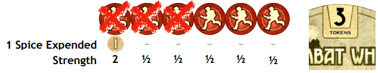
or they may lose 1 ordinary force at full strength (1) and 4 ordinary forces at half strength (½ + ½ + ½ + ½).
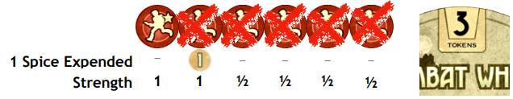
In one case, 1 Sardaukar and 2 ordinary forces are lost. In the other case, 5 ordinary forces are lost. Either choice fulfills the Emperor player’s spice/strength requirement.
Traitors
If you are in a battle and their opponent uses a leader that matches a Traitor Card you control, you may optionally call out "Traitor!" and pause the game.  D Harkonnen may reveal traitors against their ally’s opponent.
D Harkonnen may reveal traitors against their ally’s opponent. A Tleilaxu may reveal a Face Dancer matching a leader who won any battle, to replace winner’s surviving forces with Tleilaxu forces and kill the Face Dancer leader.
A Tleilaxu may reveal a Face Dancer matching a leader who won any battle, to replace winner’s surviving forces with Tleilaxu forces and kill the Face Dancer leader.
The Traitor Card is revealed.
The Player Who Revealed the Traitor Card
- Immediately wins the battle.
- Does not lose the forces or spice committed in their Battle Plan (even if a lasgun and shield are revealed).
- Places the traitorous leader in the Tleilaxu Tanks and receives the traitorous leader’s fighting strength in spice from the Spice Bank.
The Player Whose Traitor Was Revealed
- Loses all of their forces in the territory to the Tleilaxu Tanks.
- Loses all spice committed.
- Discards all of the cards they played.
Two Traitors
If both players reveal a Traitor Card, both players’ forces in the territory, their cards played, and their leaders, are lost. Neither player gets any spice.
 Phase 8: Spice Collection
Phase 8: Spice Collection
During every Spice Collection Phase, the current occupants of Carthag and Arrakeen collect 2 spice and the current occupant of Tuek’s Sietch collects 1 spice. If you occupy more than one of these strongholds, collect spice for each that you occupy. E Ecaz and their ally collect each full spice for strongholds where they coexist.
If you have forces in the sector of a territory containing spice you may now collect that spice. This is done by taking 3 spice per force if you occupy Carthag or Arrakeen or 2 spice per force if you do not occupy Carthag or Arrakeen.  E Advisors cannot collect spice. E Ecaz split spice from desert territories where they coexist with an ally, unless they agree otherwise.
E Advisors cannot collect spice. E Ecaz split spice from desert territories where they coexist with an ally, unless they agree otherwise.  E Cyborgs collect 3 spice each. B An unrevealed No-Field Token counts as 1 force for spice collection.
E Cyborgs collect 3 spice each. B An unrevealed No-Field Token counts as 1 force for spice collection.
Uncollected spice remains where it is for future turns.
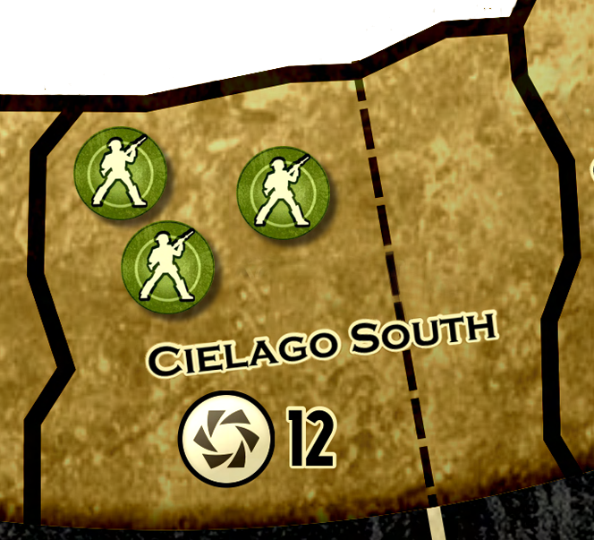
 Phase 9: Mentat Pause
Phase 9: Mentat Pause
Each player collects all of the spice in front of their Player Shield.
If an unallied player occupies at least 3 strongholds with at least one of their forces, that player wins the game. If multiple unallied players occupy a game-winning number of strongholds, the unallied player occupying the most strongholds wins.
If an Alliance occupies a total of at least 4 strongholds with one or more forces during the Mentat Pause Phase, that Alliance wins the game. If multiple players/ Alliances have a game-winning number of strongholds, those players/Alliances share the win unless they decide as a group during the Mentat Pause Phase to play another full turn, and if they wish, to increase the number of strongholds necessary to win.
E Advisor ocupation does not count toward a win.
For Ecaz to win in an alliance, they must coexist in at least 3 strongholds at the end of the Mentat Phase.- If no faction has won by the end of Turn 10 and 1) Fremen forces (± coexisting allied Ecaz forces) or no one occupy Sietch Tabr and Habbanya Sietch and 2) neither Harkonnen, Atreides, Emperor, nor Richese occupies Tuek’s Sietch (even if they are Fremen ally), the Fremen win the game.
- If no faction has been able to win the game by the end of play, you have prevented control of Dune and automatically win the game.
- E If the faction Bene Gesserit predicted win in the turn predicted, Bene Gesserit win the game alone, even if they are part of a winning alliance.
Note: If two unallied players’ forces occupy a stronghold under storm, their occupation does not count toward win.
For example, if the Atreides are in an Alliance with the Fremen, and the Fremen occupy Sietch Tabr and Carthag and the Atreides occupy Tuek’s Sietch and Arrakeen during the Mentat Pause Phase, and no other player/Alliance occupies a game-winning number of strongholds, The Atreides and Fremen win the game together.
If there are no winners, the game continues.
CHOAM may place the Inflation Token on CHOAM Charity space of Phase Track.
 Tleilaxu may discard 1 unrevealed Face Dancer to draw a new one.
Tleilaxu may discard 1 unrevealed Face Dancer to draw a new one.
Moritani may place or move 1 Terror token.
Move the Game Turn Counter to the next position on the Turn Track to begin the next turn.
 Alliances (Nexus)
Alliances (Nexus)
A Nexus occurs when a Shai-Hulud card is turned over during the Spice Blow and Nexus Phase after the first turn. During a Nexus, all players have a chance to make and/or break Alliances. Once players have had a chance to do so, play continues.
Forming an Alliance
Basics
No more than two players may be in an Alliance. The win condition for Alliances is occupying 4 strongholds.
Discussion
For up to five minutes, players may discuss among themselves the advantages and disadvantages of allying, and with whom.
Transparency
The members of an Alliance must be revealed to all. Alliances cannot be secret. Swap Alliance Cards as a reminder of who is in an Alliance.
Limits
Several Alliances can be formed during a Nexus, but no player can be a member of more than one Alliance. Once all players have had a chance to ally, no further Alliances can be made or broken until the next Nexus.
Breaking An Alliance
Breaking
Any player may break an Alliance during a Nexus by announcing that they are breaking from an Alliance.
Forming Another
Players who break from an Alliance have an opportunity to immediately form a new Alliance.
How an Alliance Functions
Winning
If an Alliance occupies a total of at least 4 strongholds with one or more forces during the Mentat Pause Phase, that Alliance wins the game.
Constraint†
Allies may never battle one another. If forces of allied factions are present in the same territory (except the Polar Sink) at the end of either player’s shipment and movement, the forces in that territory from the player whose shipment and movement just concluded are lost to the Tleilaxu Tanks.  E Advisors do not trigger the alliance constraint.
E Advisors do not trigger the alliance constraint.
† This text intentionally departs from the rules and November 2020 FAQ in 2 ways: 1) by enforcing the alliance constraint at the end of each player’s shipment and movement (instead of after the later player in turn order) and 2) by allowing Bene Gesserit advisors to co-exist in territories with allies. For the rationale behind these rulings please see Questions and Answers section.
Bidding
During the Bidding Phase, allies may help pay for each other’s Treachery Cards. To do so, they contribute to the card’s purchase by paying spice up to, but not more than, the card’s purchase price. You cannot bid more than the total of the spice you have plus the spice that their ally is willing to give to help pay for a card.  C Unless transferred directly to the purchasing player using the Emperor’s alliance ability, any spice the Emperor pays for their ally’s Treachery Card purchase goes to the Spice Bank. Any spice Richese pays toward their ally’s purchase in a Richese Treachery Card or Black Market auction goes to the
C Unless transferred directly to the purchasing player using the Emperor’s alliance ability, any spice the Emperor pays for their ally’s Treachery Card purchase goes to the Spice Bank. Any spice Richese pays toward their ally’s purchase in a Richese Treachery Card or Black Market auction goes to the  C EmperorSpice Bank.
C EmperorSpice Bank.
Shipment
During the Shipment and Movement Phase, allies may help pay for each other’s shipments. To do so, they contribute to the shipment’s payment by paying spice up to, but not more than, the shipment’s cost. Any spice the Spacing Guild pays for their ally’s shipment goes to the Spice Bank.
Alliance Abilities
Allies may assist one another as specified on their Player Sheets.
Secrecy
Unless indicated by a card effect or faction advantage, any player may share any information they choose with any other player at any time, either publicly or privately. Players are never required to keep their cards, spice holdings, or the traitors they selected secret. They also are not obligated to reveal this information either.
All spice holdings should be kept behind Player Shields. The number of Treachery Cards held must be kept open during the Bidding Phase but can be kept secret at all other times. Discard piles are not public information and may not be searched unless an effect allows you to do so (e.g., Nullentropy Box).
Bribery
Players who are not members of the same Alliance can make any kind of verbal deals or bribes between one another. Once made, these deals and bribes must be stated aloud and must be honored. A player cannot renege on a deal or bribe. If part of a deal becomes impossible to honor, then that part of the deal is void. All parties of a deal may agree to nullify the deal at any time.
A deal or bribe cannot involve the transfer or gift of Treachery Cards, leaders, forces, or faction advantages. This leaves secret information, future actions, and, of course, spice. Spice transferred as part of a deal or bribe is placed in FRONT of the recipient’s Player Shield. Players may collect spice from in front of their Player Shield and add it to their normal spice only at the start of each turn’s Mentat Pause phase.  C Emperor may transfer any amount of spice to allies at any time for any reason.
C Emperor may transfer any amount of spice to allies at any time for any reason.
A player cannot make a deal or bribe that would contravene the rules or the player’s faction advantages. These are the only limitations.
Karama Cards
Karama Cards are Treachery Cards that allow you to gain a one-time special advantage unique to your faction, or to prevent one use of an opponent’s faction advantage.  D May use worthless Cards as Karama Cards.
D May use worthless Cards as Karama Cards.
Revised Karama Card text and clarifications are included below (aligned to the CHOAM expansion replacement card):
After game setup and factions have completed their "At Start" actions, use this card to stop one use of a faction advantage (including alliance abilities) when a player attempts to use it. When used on faction advantages during a battle this must be played before Battle Plans are revealed.
Or, this card may be used to do one of the following when appropriate:
-
- Purchase any player’s Force Shipment at Guild rates (½ normal), paid to the Spice Bank.
-
- Bid more spice than you have (without revealing this card) and/or purchase a Treachery Card without paying spice for it (cannot be used for Richese Auctions or if their hand is full).
-
- Use their faction’s Special Karama Power (limit once per game).
Cannot be used to stop a Special Victory Condition or Special Karama Power. Discard after use.
Use of a Karama Card to prevent the use of faction advantages that are not restricted to a specific timing or resource prevents their use for that specific effect rather than for a single instance (e.g., the Emperor sharing spice with their ally for bidding on a specific Treachery Card or for supporting troops in a specific battle).
If a Karama Card is used to stop one of their faction advantages, you may modify their action as long as the modification abides by the effects of the Karama Card (e.g., as the Fremen, you may change their movement after a Karama Card prevents you from moving two territories as long as their new move is to an adjacent territory).
Faction Advantages Prevented by Karama
| Faction advantages that may be prevented by Karama are included in the following table and are marked with |
|
|---|---|
| Prevent Atreides from looking at a card up for bidding. | Prevent Atreides (or ally) from knowing one part of a battle plan. |
| Prevent Atreides from looking at a Spice Card. | Prevent Atreides from using the Kwisatz Haderach token in any one battle. |
| Prevent Bene Gesserit from using a Worthless Card as a Karama; the Worthless Card must be discarded. | Prevent Bene Gesserit from shipping a Spiritual Advisor. |
| Prevent Bene Gesserit from collecting CHOAM Charity when holding 2+ spice. | Prevent Bene Gesserit (or ally) from using the Voice in any one battle. |
| Prevent Bene Gesserit from flipping one group of tokens to or from advisors. | |
| CHOAM | |
| Prevent CHOAM from discarding one Worthless Card/set of duplicates for spice. | Prevent CHOAM from receiving payment for spice support in any one battle. |
| Prevent CHOAM from discarding a Worthless Card for its special effect. | Prevent an audit by the Auditor in any one battle. |
| Prevent CHOAM from collecting 2 spice/faction and paying out CHOAM Charity. | Prevent CHOAM from placing their Inflation Token this turn. |
| Limit CHOAM’s force revival to 3 (or 5 if Tleilaxu allows), paid at full price. | Prevent CHOAM from trading a Treachery Card with their ally. |
| Ecaz | |
| Prevent Ecaz from placing any Ambassadors this turn. | Prevent Ecaz (but not their ally) from collecting spice for co-occupying strongholds. |
| Force the lead faction in a co-occupied battle to dial their own forces, and their ally’s forces to count as zero. | |
| Prevent Emperor giving spice to an ally for one specific effect. | Prevent Emperor from reviving 3 extra forces for their ally. |
| Prevent Emperor from receiving payment for one Treachery Card. | Force all Sardaukar to be treated as normal forces in any one battle. |
| Prevent Fremen from viewing the next storm movement card. | Prevent Fremen from granting ally 3 free revivals. |
| Force one group of Fremen forces to take full losses from storm movement. | Prevent Fremen from shipping into storm at half losses. |
| Cause the Fremen to be eaten by a sandworm instead of being able to ride it. | Limit Fremen movement to 1 territory (without ornithopters). |
| Prevent Fremen protection of ally’s forces from one sandworm. | Force all Fedaykin to be treated as normal forces in any one battle. |
| Prevent Fremen from choosing placement of one sandworm. | Force Fremen to expend spice to count forces at full strength in any one battle. |
| Prevent Harkonnen from gaining an extra card during bidding. | Prevent Harkonnen from revealing a traitor in their ally’s battle. |
| Prevent Harkonnen from capturing a leader after any one battle. | |
| Prevent Hidden Mobile Stronghold from moving and collecting spice. | Limit Cyborg movement to 1 territory (without ornithopters). |
| Prevent Ixians from looking at the Treachery Cards that will be part of the auction and drawing an extra card to place on top or bottom of the deck. | Prevent Suboids from replacing Cyborgs after any one battle. |
| Prevent Ixian replacement of a Treachery Card during bidding. | Note: Karama has no effect on Suboid strength. |
| Prevent Ixian ally from discarding a purchased Treachery Card. | |
| Moritani | |
| Prevent Moritani from placing or moving a Terror token this turn. | Prevent Moritani from forming one Alliance during the Shipment and Movement Phase. |
| Prevent Moritani from acquiring Duke Vidal this turn. | |
| Richese | |
| Prevent Richese from conducting a Black Market auction this turn. | Prevent Richese (or ally) from making one No-Field Token shipment. |
| Prevent Richese from auctioning a Richese Treachery Card this turn. | Prevent Richese from giving their ally a Richese Treachery Card from hand. |
| Prevent Spacing Guild from taking shipment and movement out of turn. | Prevent Spacing Guild (or ally) from using half-price shipping rates once. |
| Prevent Spacing Guild from receiving payment for one shipment. | Prevent Spacing Guild (or ally) from cross-shipping or shipping to reserves. |
| Limit force revival to 3 for all players. | Prevent early revival of one leader. |
| Force Tleilaxu (or ally) to pay full price for revival. | Prevent Tleilaxu from gaining another player’s specific leader as Ghola this turn. |
| Prevent payment to Tleilaxu for one revival. | Prevent Tleilaxu from replacing a Face Dancer card during the Mentat Pause Phase. |
| Prevent Tleilaxu from receiving spice for players using free revival or a Ghola Card. | |
Special Karama Powers
| Power | Phase Played |
|---|---|
| Battle | |
| CHOAM discard Treachery Cards from hand to gain 3 spice per card. | At any time |
| Ecaz add difference between their leader and opponent leader in battle if you don’t play a weapon or defense. | Battle |
| Revival | |
| Spice Blow and Nexus | |
| Bidding | |
| Shipment and Movement | |
| Moritani force their opponent to discard or keep any or all of the Treachery Cards they played. | Battle |
| Richese pay 3 spice to secretly buy 1 Richese Treachery Card. | At any time |
| Shipment and Movement | |
| Revival |
Note: Bene Gesserit have no Special Karama Power.
Variants
The following variants can be added to a game of Dune, together or separately, irrespective of which factions you choose to include.
Tech Tokens
Controlling Tech Tokens
Tech Tokens indicate that a faction controls a specific industry and are kept in front of Player Shields. If you defeat a faction in battle that has 1 or more Tech Tokens, you take the Tech Token of their choice from them.
A single player controlling all 3 Tech Tokens counts as a Stronghold for winning the game (allies cannot share control of Tech Tokens).
Assigning Tech Tokens
At the start of the game, the Tleilaxu control the Axlotl Tanks, the Ixians control Heighliners, and the Fremen control Spice Production. In games where any of these factions are not present, after placing the Storm in the first turn, each uncontrolled Tech Token is assigned randomly to the next faction in turn order without a Tech Token until all Tech Tokens are controlled and no player controls more than 1 Tech Token.
Tech Token Income
Each Tech Token that you control can potentially provide income from the Spice Bank. Any spice gained from Tech Tokens is placed on the Tech Token and then collected at the end of the current phase. Each Tech Token indicates in which phase the Tech Token is activated and which faction does not trigger that Tech Token’s income.
 |
AXLOTL TANKSIf at least one player, including you, takes free revival, you collect 1 spice for every Tech Token you control. However, if only the Tleilaxu player takes free revival, you do not collect spice. |
 |
HEIGHLINERSIf at least one player, including you, ships forces from off-planet, you collect 1 spice for every Tech Token you control. However, if only the Spacing Guild ships forces from off-planet, you do not collect spice. |
 |
SPICE PRODUCTIONIf at least one player, including you, takes CHOAM Charity, you collect 1 spice for every Tech Token you control. However, if only the Bene Gesserit and/or CHOAM take CHOAM Charity using their faction advantages, you do not collect spice. |
Leader Skill Cards
Leader Skill Cards provide one leader of each faction with a unique advantage.
When using Leader Skill Cards, complete the Treachery step of setup after step 1, then deal two Leader Skill Cards to each faction. Each faction chooses one to keep, and shuffles the other back into the Leader Skill Deck. Play their Leader Skill Card face up in front of their Player Shield, and assign one of their Leader Discs to it by placing the disc face up next to it. Complete the remaining steps of setup normally starting with the Traitor step.
Leader Skills grant a special bonus or ability for as long as the skilled leader is alive, and the card is face up in play (either in front of their Player Shield or used in a battle). If a skilled leader is captured, the skill goes with them, but they are placed behind the Harkonnen Player Shield. If a skilled leader is killed, shuffle the Leader Skill Card back into the Leader Skill Deck. Whenever you revive one of their leaders, if you have no Leader Skill Card, you may draw two Leader Skill Cards, choose one to play face up in front of their Player Shield, and assign the newly revived leader to that skill. Shuffle the unchosen Leader Skill back into the Leader Skill Deck.
Leader Skills also provide advantages when the skilled leader is used in and survives a battle. When you choose a leader for a battle, you may either leave the skilled leader face up in front of their Player Shield, or take it and the Leader Skill Card behind their Player Shield. If you use a skilled leader in battle, include its Leader Skill Card in their Battle Plan. This is the only way that both parts of the skill can be in effect in a battle (if applicable). No part of a skill is available to you while a skilled leader and its associated Leader Skill Card are behind their Player Shield.
After the Battle Phase, return skilled leaders in territories on the map and their associated Leader Skill Card in front of their Player Shield.
A Leader Skill must be used before a faction ability (e.g., the Mentat skill before Atreides Prescience). Any skill that mentions a card type (e.g., Poison Weapon) requires that the card included in the Battle Plan is played as that card type to gain the skill bonus. Therefore, a card like Chemistry would have to be played as a poison weapon to gain the Master of Assassins skill bonus.
Advanced Stronghold Cards
These cards provide bonuses representing home-field advantage for the factions occupying strongholds. During the Mentat Pause Phase (not during game setup), each faction occupying a stronghold takes its corresponding Stronghold Card from the supply or the faction who previously held the card. If a stronghold is unoccupied, its Stronghold Card is placed in the supply.
Homeworlds
Homeworld Tokens
Represent each faction’s homeworld or domain and is where their reserves are kept. Homeworlds are not territories and so are not subject to faction advantages such as Ecaz’s Occupy and Bene Gesserit’s Intrusion.
Homeworld Cards
Depict abilities that are granted to each faction depending on the number of forces in their reserves:
- High threshold: As long as a faction maintains the minimum threshold of reserves, they gain the listed abilities. When reserves dip below the threshold, flip the card to its low threshold side.
- Low threshold: When a faction’s reserves reach a low-threshold reserve, the listed low threshold abilities are active. When reserves exceed the threshold, flip the card to its high threshold side.
Revival
The main way for a player to add forces to their own homeworld is through force revivals. Force Shipment may also be used to send forces to homeworlds in the following ways:
- All factions may ship their forces from one homeworld to another homeworld
at a cost of 1 spice per force (half price for the Guild).
- The Spacing Guild may ship any number of their own forces from one
territory of Arrakis to any homeworld (including their own) at a cost of 1 spice per force (before discount).
- Using their high threshold homeworld advantage, the Spacing Guild may offer
to ship any number of another faction’s forces from one territory of Arrakis to any homeworld at a cost of 1 spice per force (before discount).
Battles
As part of the normal resolution of battles during the Battle Phase, wherever two or more players’ forces occupy a Homeworld token, battles must occur between those players. Normal battle rules are used with the following modifications:
- Traitors and Face Dancers cannot be called by a faction battling on an opponent’s homeworld.
- The homeworld’s faction gains the battle strength listed on the face up portion of their Homeworld card for free.
- Lasgun/shield explosions only send the listed number of the homeworld faction’s forces to the Tlielaxu Tanks, no matter what was dialed. Both players still lose the battle and leaders are killed normally.
Occupying Other Homeworlds
When another faction’s forces are alone on their homeworld, they are immediately considered the "Occupier" and gain:
- The listed Occupied ability.
- The number of spice (if any) shown in the occupied section of the Homeworld card from the Spice Bank during the Spice Collection phase. Spice collected this way may be immediately shared with the Occupier’s ally An Occupier retains these advantages until none of their forces remain on the homeworld.
Alliances
No player may enter into an Alliance with any faction whose forces occupy their homeworld, nor may a faction ship to or occupy their ally’s homeworld.
Emperor’S Homeworlds
The Emperor has two homeworlds: Kaitain and Salusa Secundus; normal forces are revived to Kaitain and Sardaukar forces are revived to Salusa Secundus. During Shipping and Movement, the Emperor can use their Force Movement to move any number of their forces from Kaitain to Salusa Secundus (or vice versa). When the Emperor makes a Force Shipment to Arrakis or another homeworld, forces can come from both Emperor homeworlds as part of the same shipment.
Choam Homeworld
Note that CHOAM’s homeworld of Tupile has a penalty for high-threshold, but an advantage when they are at low threshold, opposite of the other homeworlds.
Nexus Cards
Nexus Cards provide players incentives and special effects for not joining an Alliance.
At the end of each Spice Blow and Nexus phase where a Nexus occurred and at least one Alliance exists, any player not in an Alliance may, after discarding their previous Nexus card (if any), draw one Nexus Card. If you draw their own faction’s Nexus card, you may discard it immediately to draw a new one.
Each Nexus Card is associated with one faction; its effect is determined by the factions in play this game:
BETRAYAL: If the Nexus Card faction is controlled by another player, this card allows you to cancel an advantage that faction has when they try to use it. In some cases, this even allows a player to cancel an alliance ability.
CUNNING: If you control the Nexus Card faction, this card gives you an enhanced version of one of their advantages.
SECRET ALLY: If the Nexus Card faction is not in the game, you have a secret alliance with that faction, and this card allows you to use one of their advantages.
Nexus Cards are discarded after use. If you need to draw a Nexus Card and none are available, shuffle the discards to form a new deck. If you hold a Nexus Card, you must discard it to enter into an Alliance.
Discovery Tokens
Discovery tokens add new elements to the game on sections of the board that are often bypassed. For this variant, shuffle the seven new Spice Cards into the Spice Deck. Then, shuffle the eight Discovery tokens face down into a supply.
Great Maker Spice Card
This is treated like a normal Shai Hulud card; however, a vote is held to determine whether or not the Nexus occurs. In storm order, each player votes yes or no. Unless a majority vote yes, no Nexus occurs.
Afterward, regardless of the outcome of the vote, the Fremen may ride the Great Maker sandworm by moving any number of their forces in reserves to any sector of any territory (including the HMS), subject to storm and occupancy rules (instead of riding from a territory on the board or placing the Sandworm token). Note that a Karama Card cannot prevent riding the Great Maker.
Discovery Spice Card
Whenever a Discovery Spice Card is drawn, place 6 spice in the sector and territory indicated by the card (if it is currently in storm, no spice is placed). Any spice or forces already in that territory are destroyed by the spice blow (this only occurs when Discovery Spice Cards are drawn). Then, place a random Discovery token of the indicated type (Hiereg or Smuggler) face down in the other sector and territory shown on the card.
Tokens
There are two types of Discovery tokens: Hiereg and Smuggler. Hiereg tokens are placed in desert territories, and Smuggler tokens are placed in rock territories. During the Spice Collection Phase, any faction with non-advisor forces in a territory with a Discovery token may look at the token and choose whether or not to reveal it immediately. Unrevealed Discovery tokens remain face down, able to be revealed during a subsequent turn.
Five of the Discovery tokens are locations, and remain face up in place when re vealed. These locations are considered a territory within the territory where the token is located, cost 1 spice per force to ship to, and protect forces in them from the effects of the storm and sandworms. Location Discovery Tokens cannot be occupied when revealed; at the start of the next turn, before the Storm Phase, any faction in a territory with a Location Discovery token revealed during the previous turn may move any number of their non-advisor forces in that territory into the location. Outside of this, the only way to occupy these locations is through normal Force Shipment or Force Movement.
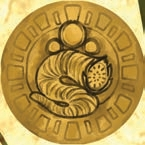
Hiereg Tokens
Whenever a Hiereg token is face down on the board, the Fremen may look at it at any time without revealing it.
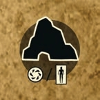
Jacurutu Sietch: Counts as a normal stronghold. When you win a battle in Jacurutu Sietch, gain 1 spice for each undialed opponent force that is sent to the Tanks.
Cistern: If you occupy this territory during the Spice Collection Phase, gain 2 spice from the Spice Bank.
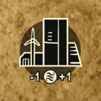
Ecological Testing Station: If you occupy this territory during the Storm Phase, you may modify the movement of the storm by ±1 (does not affect Weather Control).
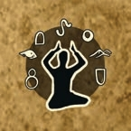
Shrine: If you occupy this territory, you may play Truthtrance Cards as Karama Cards, and vice versa.
Smuggler Tokens
Whenever a Smuggler token is face down on the board, the Spacing Guild may look at it at any time without revealing it.
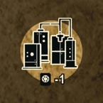
Orgiz Processing Station: If you occupy this territory during the Spice Collection Phase, steal 1 of the collected spice each time collection occurs in a territory containing spice.
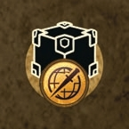
Treachery Card Stash: Gain 1 Treachery Card. If this causes you to exceed their hand limit, discard 1 Treachery Card of their choice. Remove this token from the game.
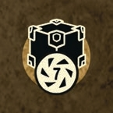
Spice Stash: Gain 7 spice from the Spice Bank. Remove this token from the game.
Ornithopter: Gain this token. You may discard it on any subsequent turn to make a Force Movement of up to three adjacent territories instead of their normal move.
Themed Matchups
When playing with the Ixian & Tleilaxu, CHOAM & Richese, and Ecaz & Moritani expansions together, instead of choosing factions normally, consider choosing factions based on the following thematic groupings:
Intrigue: Deal every player two factions. Each player secretly chooses one, and all players reveal their selections simultaneously.
Faction Player Sheets
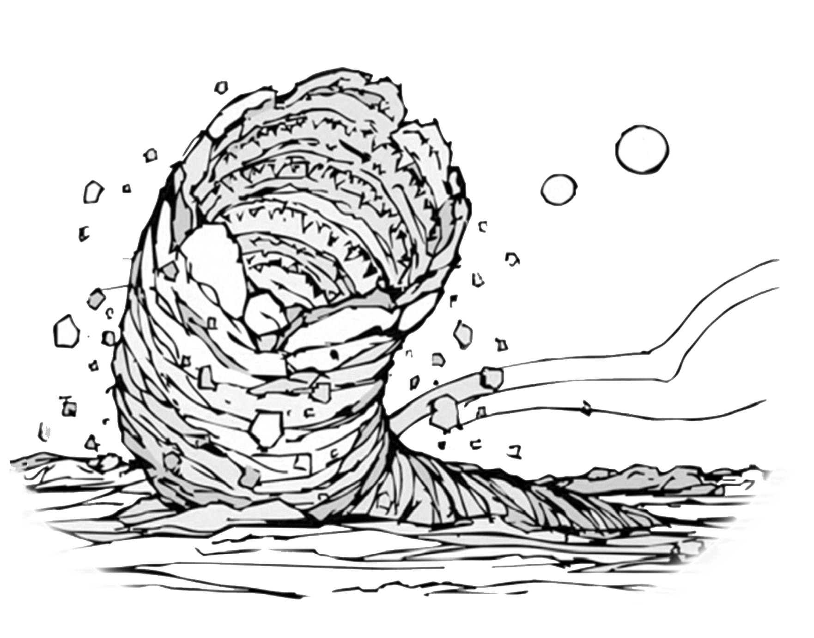
Atreides
You have limited prescience.


10 forces in Arrakeen and 10 forces in reserves (off-planet). Start with 10 spice and 1 random Treachery Card. Place the Treachery Deck and Spice Deck near your player position. You manage these decks.
 FREE REVIVAL
FREE REVIVAL
2 forces/turn
A. – BIDDING: During the Bidding Phase, you may look at each Treachery Card as it comes up for purchase before any faction bids on it. You, and only you, may keep written records about cards.
B. – MOVEMENT: At the start of the Shipment and Movement Phase, before anyone moves, you may look at the top card of the Spice Deck.
C. – BATTLE: During the Battle Phase, you may force your opponent to reveal your choice of one of the four elements they will use in your Battle Plan against you: the leader, weapon, defense, or number dialed. The number dialed cannot be chosen in a battle with a No-Field Token. If you ask about a weapon or defense and your opponent tells you that they are not playing that element, you cannot then ask to see a different element.
D. – KWISATZ HADERACH: The Kwisatz Haderach token starts out inactive. Use the Kwisatz Haderach card and counter token to secretly keep track of force losses. Immediately after you have lost 7 or more forces in battle, it becomes active for the rest of the game.
- Add +2 strength to your leaders or cheap heroes in one territory per turn. If the leader or cheap hero is killed, the token has no effect in the battle.
- A leader accompanied by the token cannot turn traitor.
- The token can only be killed by a lasgun/shield explosion. If killed, it must be revived like any other leader; its revival costs 2 spice.
- The token has no effect on the rule governing revival of Atreides leaders.
E. – You may assist your allies by forcing your opponent to show them one element of your Battle Plan.
F. – You may use a Karama Card before Battle Plans are revealed to look at any one player’s entire Battle Plan.
Bene Gesserit
You are adept in the ways of mind control.
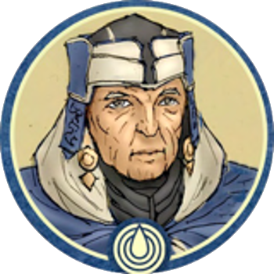
20 forces in reserves (off-planet; see START OF GAME ability). Start with 5 spice and 1 random Treachery Card.
1 force/turn
A. – PREDICTION: After step 1 (Positions) in the Setup Phase, you secretly
predict when one other faction will win, placing a turn number card and a faction card from your Prediction Cards face down behind your Player Shield. Place the unused Prediction Cards face down back in the box. If the faction you predicted wins (alone or as an ally, even your ally) in the turn you predicted, reveal your prediction and win alone. You also can win normally. You can’t predict that the Spacing Guild or Fremen will win with your special victory conditions.
B. – START OF GAME: After the Fremen placement (if that faction is in the
game), you start with one advisor in any territory of your choice.
C. – CHARITY: You always receive CHOAM charity of 2 spice regardless of how
many spice you already have.
D. – KARAMA: You may use any worthless Treachery Card as a Karama Card.
E. – ADVISORS: Your forces have two sides, the advisor (striped) and the fighter (unstriped). Fighters are normal forces.
Advisors are a special type of force that coexists peacefully with other faction forces in the same territory. Advisors have no effect on the play of the other factions whatsoever and cannot collect spice; be involved in combat; count as occupying a stronghold for victory conditions, ornithopter use, or Advanced Stronghold Cards; count against a stronghold’s 2-faction limit; or play Family Atomics. Advisors are still susceptible, however, to storms, sandworms, lasgun/shield explosions, and atomics.
Whenever any other faction ships forces to Dune from off-planet, you may ship for free one advisor from your reserves into that same territory or the Polar Sink. If Bene Gesserit fighters are already present in this territory and not flipped to advisors with your Intrusion advantage, the advisor must be shipped to the Polar Sink (or not at all).
All Bene Gesserit forces in a territory must be of the same type (advisor or fighter):
- If advisors are ever alone in a territory, they automatically flip to fighters.
- Advisors moved to occupied territories without Bene Gesserit forces may flip to fighters or stay as advisors.
- Bene Gesserit forces shipping/moving into a territory already containing Bene Gesserit forces ship/move as the type of Bene Gesserit force present in the destination territory.
F. – INTRUSION: When another faction enters a territory where you have fighters, you may immediately flip those fighters to advisors.
G. – BATTLE: At any time after the Spice Blow and Nexus Phase but before any shipment has occurred, you may flip advisors not under storm or in territories with allies to fighters anywhere you wish to battle. To do so, publicly announce the flipping, and flip all of your advisors to fighters in each territory in which you wish to battle.
H. – VOICE: You may force your opponent to play or not play a specific card or type of card (projectile weapon, poison weapon, projectile defense, poison defense, Worthless Card, cheap hero, or specific named special weapon or defense) in your Battle Plan.† If your opponent can’t comply with your command, they are not required to reveal so and may do as they wish.
I. – In an Alliance you may Voice your ally’s opponent.
None.
CHOAM
You can manipulate the economy.
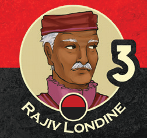
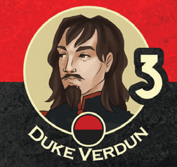
20 forces in reserves (off-planet). Start with 2 spice and 1 random Treachery Card.
0 forces/turn
A. – CHARITY: You collect CHOAM charity first and always receive 2 spice per faction in the game, regardless of how many spice you already have. When other factions collect CHOAM Charity, it is paid to them from your spice.
B. – TREACHERY: Your hand limit is 5 Treachery Cards; when you have 5 Treachery Cards you must pass during bidding. In addition, at the end of any phase you may discard Treachery Cards as follows:
- You may reveal multiple cards from your hand with the same name to discard the surplus cards f or 3 spice each.
- You may discard Worthless Cards for 2 spice each. Alternatively, you may discard Worthless cards for your corresponding effect listed below:
Baliset – Prevent one player from moving forces into a territory you occupy during the Shipment and Movement Phase (they may ship in normally).
Jubba Cloak – Protect one group of your forces from losses during storm mo vement.
Kull Wahad – Prevent one player from playing a Karama Card for a specific effect (see Karama Cards) as they attempt to do so.
Kulon – Move your forces one extra territory during your Force Movement.
La La La – Prevent one player from taking free revival during the Revival Phase.
Trip to Gamont – Return 1 force belonging to another player to that player’s reserves during the Mentat Pause Phase.
C. – REVIVAL: You pay only 1 spice to revive each of your forces. You may
revive any number of your forces during the Revival Phase.
D. – INFLATION: Once per game during the Mentat Pause Phase, you may place
your Inflation Token on the CHOAM Charity Phase of the Phase Track. In the following game turn, the amount of spice each player collects for CHOAM Charity is either doubled or canceled according to which side of the Inflation Token is face up. In the Mentat Pause Phase following a doubled or canceled CHOAM Charity Phase, flip the Inflation Token to its other side or remove it from the game if it has already been flipped. Players cannot make spice bribes while the Inflation Token is in play with the double side face up.
E. – AUDITOR: You have a special leader, the Auditor, who allows you to see
cards in your opponent’s hand when used as a leader in a battle. If the Auditor survived the battle, you may audit your opponent by looking at up to two random cards in your hand (not counting any they used in battle), or one card if the Auditor was killed. The audited faction may pay you 1 spice per card you would get to see to cancel the entire audit. The Auditor is eligible to be revived each turn, regardless of how many of your leaders are in the Tleilaxu Tanks. The Auditor cannot be a ghola for the Tleilaxu, captured by the Harkonnens, nor assigned a Leader Skill Card.
F. – FORCES: When other factions pay spice for support of your forces in
battle, half of the total spice paid (rounded down) goes to you (you receive 0 spice when a Traitor is revealed). When you pay spice for support of forces, it goes to the Spice Bank.
G. – Once per game turn, at the end of any phase, you may trade a Treachery
Card with your ally. The trade must be two-way (each faction giving and receiving a card). You may also pay for some or all of your ally’s spice support in battle (spice you pay goes to the Spice Bank).
H. – At any time, you may use a Karama Card to discard any number of
Treachery Cards from your hand to gain 3 spice per card. Ability can be cancelled by Karama.
Ecaz
You forge strong alliances.
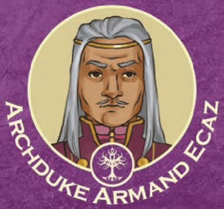
6 forces in Imperial Basin and 14 forces in reserves (off-planet). Start with 12 spice, the Ecaz Ambassador token + 5 random Ambassador tokens (your supply), and 1 random Treachery Card.
FREE REVIVAL2 forces/turn
A. – AMBASSADORS: At the end of the Revival Phase, you may spend spice to place Ambassador tokens from your supply in any stronghold with no Ambassador tokens that is not in storm. The cost is 1 spice for the first Ambassador token, but increases by 1 spice for each subsequent Ambassador token placed that turn.
When forces (excluding advisors) ship or move to a stronghold containing an Ambassador token, you may immediately trigger its effect (interrupting the triggering faction’s action) and set it aside if a) you are not allied with the triggering faction, and b) the Ambassador token does not show the triggering faction’s symbol.
Ecaz: Return this Ambassador token to your supply. Add Duke Vidal to your leader pool if he is not in the Tleilaxu Tanks, captured, or a ghola. If you use Duke Vidal in a battle and he survives, place his Leader Disc next to the game board.
OR
Form an Alliance with the faction triggering the token as long as neither of you are currently allied and they agree to the Alliance. Then, add Duke Vidal to the triggering faction’s leader pool. If Duke Vidal is still in your leader pool at the end of the turn, place his Leader Disc next to the game board.
Atreides: Look at the triggering faction’s hand.
Bene Gesserit: Trigger the effect of any Ambassador token not in your supply, then remove the Bene Gesserit Ambassador token from the game.
CHOAM: Discard any number of your Treachery Cards. Gain 3 spice from the Spice Bank per card discarded this way.
Emperor: Gain 5 spice from the Spice Bank.
Fremen: Move some or all of your forces from one territory to any sector of any territory (including the HMS), subject to storm and occupancy rules.
Harkonnen: Look at 1 random Traitor Card the triggering faction holds.
Ixian: Discard 1 of your Treachery Cards, then draw the top card from the Treachery Deck.
Richese: If your hand is not full, pay 3 spice to the Spice Bank to draw the top card from the Treachery Deck.
Spacing Guild: Ship up to 4 of your forces from reserves for free to any sector of any territory, subject to storm and occupancy rules.
Tleilaxu: Revive one of your leaders OR up to 4 of your forces for free.
After all 5 of your random Ambassador tokens have been triggered, combine them with the unused tokens and draw a new supply of 5 random Ambassador tokens. Ambassador tokens are susceptible to storms, lasgun/shield explosions, and atomics: they return to your supply when exposed to any of these effects.
B. - OCCUPY: You may enter and occupy the same territory as your ally, coexisting
peacefully with your forces. When coexisting, you and your ally’s forces are considered the same faction for Traitor and Face Dancer Card reveals, and your forces do not count against a stronghold’s 2-faction limit but do count for ornithopter use.
When the aggressor chooses to resolve a battle in a territory where you coexist with your ally, you must decide whether you or your ally is considered the lead faction in the battle (formulating a Battle Plan with your leaders and Treachery Cards). The number dialed for the lead faction’s battle plan always includes half of the Ecaz forces in the territory (rounded up) at full strength, plus as many of your ally’s forces as the lead faction chooses to dial. If the lead faction wins the battle, half of the Ecaz forces (rounded down) remain in the territory (the rest go to the Tleilaxu Tanks), and your ally loses your forces dialed normally.
If you and your ally coexist in at least 3 strongholds at the end of the Mentat Pause Phase, your Alliance wins.
C. – REVIVAL: Duke Vidal can only be revived by House Ecaz (except as a ghola by the
Tleilaxu). You may always revive Duke Vidal during the Revival Phase for 5 spice, no matter how many of your leaders are in the Tleilaxu Tanks. You may revive leaders normally when at least 5 of your leaders are in the Tleilaxu Tanks (counting Duke Vidal).
D. - LOYALTY: At the start of the game, before Traitor Cards are dealt, set aside 1
random Traitor Card from your faction face up for all players to see. It is never added to the Traitor deck.
E. - COLLECTION: During the Spice Collection Phase, you and your ally each collect the
full amount of spice for strongholds where you coexist (Arrakeen, Carthag, and/or Tuek’s Sietch). When collecting spice from a desert territory where you coexist, split the spice however you and your ally agree, or as evenly as possible with your ally gaining the remainder if you can’t agree.
F. – You may choose to have your ally benefit from a triggered Ambassador token’s
effect instead of you.
G. – You may use a Karama Card before Battle Plans are revealed to add the
difference between your leader disc and your opponent’s leader disc to your number dialed, as long as you played neither a weapon nor a defense. Ability can be cancelled by Karama.
Emperor
You have access to great wealth.
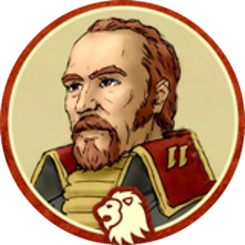
20 forces in reserves (off-planet). Start with 10 spice and 1 random Treachery Card.
1 force/turn
A. – BIDDING: Whenever any other faction pays spice for a Treachery Card, they pay it to you instead of the Spice Bank.
B. – SARDAUKAR: Your five starred forces, elite Sardaukar, are worth two normal forces in battle and in taking losses; against the Fremen they are worth just one force. Sardaukar are treated as one force in revival; however, only one Sardaukar force can be revived per turn.
C. – You may share your great wealth with your allies by transferring any amount of spice to them at any time and for any reason (placed behind your Player Shield). You may also assist your allies by paying spice for the revival of up to 3 extra of your forces from the Tleilaxu Tanks per Revival Phase.
D. – You may use a Karama Card during the Revival Phase to immediately revive up to three forces or one leader for free. These revivals do not count against revival limits for the turn. Ability can be cancelled by Karama.
Fremen
You are native to Dune and know its ways.
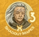
10 forces distributed as you like on Sietch Tabr, False Wall South, and/or False Wall West; and 10 forces in reserves (on the far side of Dune). Start with 3 spice and 1 random Treachery Card.
3 forces/turn
A. – STORM RULE: After the first placement of Storm using Battle Wheels, subsequent storm movement is determined by using the Storm Deck. After moving the storm during the Storm Phase, randomly select a card from the Storm Deck, secretly look at it, and place it face down next to the game board. In the next Storm Phase, reveal the number on that Storm Card; move the storm counterclockwise the number of sectors indicated on the Storm Card. Shuffle the revealed Storm Card into the Storm Deck, randomly select a Storm Card, and look at it for the next turn’s storm movement. After secretly looking at the Storm Card, place it face down next to the game board.
B. – STORM LOSSES: If your forces are caught in a storm, only half of them are killed (rounded up). You may also ship into a storm at half loss.
C. – SHAI-HULUD: If Shai-Hulud appears in a territory where you have forces, they are not devoured. Upon conclusion of the Nexus, you may ride the sandworm and move some or all of your forces in the territory to any sector of any territory (including the HMS), subject to storm and occupancy rules. Any forces in that territory are not devoured. If multiple Shai-Hulud appear during a Spice Blow, you may ride each sandworm from the origin territory to any other territory.
D. – SANDWORMS: During a Spice Blow, all consecutive sandworms that appear after the first sandworm can be placed by you in any sand territory you wish.
E. – SHIPMENT: Your reserves are on-planet; you do not ship to the board using off-planet shipment rules. For your Force Shipment you may bring any or all of your reserves for free onto The Great Flat or onto any one territory within two territories of The Great Flat (subject to storm and occupancy rules).
F. – MOVEMENT: During your Force Movement you may move your forces two territories instead of one.
G. – BATTLES: Your forces do not require spice to count at your full strength.
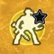
H. – FEDAYKIN: Your three starred forces, Fedaykin, are worth two normal forces in battle and in taking losses. They are each treated as one force in revival; however, only one Fedaykin force can be revived per turn.
I. – FREMEN SPECIAL VICTORY CONDITION: If no faction has won by the end of turn 10 and 1) Fremen forces (± coexisting Ecaz forces) or no one occupy Sietch Tabr and Habbanya Sietch and 2) neither Harkonnen, Atreides, Emperor, nor Richese occupies Tuek’s Sietch (even if they are your ally), your plans to alter Dune have succeeded and you and any allies win the game.
J. – You may protect your allies from being devoured by sandworms and, at your discretion, may also increase your free revival to 3 forces. In addition, your allies win with you if you win with the Fremen Special Victory Condition.
K. – You may use a Karama Card during the Spice Blow and Nexus Phase to place the Sandworm Token in any sand territory that you wish. This is treated as a normal sandworm and causes a Nexus.
Harkonnen
You excel in treachery.
10 forces in Carthag and 10 forces in reserves (off-planet). Start with 10 spice and 2 random Treachery Cards.
FREE REVIVAL2 forces/turn
A. – TRAITORS: At the start of the game keep all 4 Traitor Cards you are dealt. Any of these Traitor Cards can be revealed in a battle as a traitor.
B. – TREACHERY: Your hand limit is 8 Treachery Cards; when you have 8 Treachery Cards you must pass during bidding. You start the game with 1 extra Treachery Card (2 total). Every time you buy a Treachery Card (including Richese auctions), you must take an extra Treachery Card for free from the Treachery Deck (unless it would put your over your hand limit).
C. – CAPTURED LEADERS: After you win a battle you may choose to capture a leader from the loser of the battle. If you choose to capture a leader, randomly select 1 leader from the loser (including the leader used in the battle, if not killed, but excluding all leaders used elsewhere that turn and in the Tleilaxu Tanks). After looking at the captured leader you must decide to either 1) place the Leader Disc face down into the Tleilaxu Tanks to gain 2 spice from the Spice Bank; or 2) keep the leader and use it once in a battle, after which, if it wasn’t killed during that battle, you must return that leader to its faction. The identity of the captured leader is not required to be revealed. When all of your own leaders have been killed, you must immediately return all captured leaders to your factions. Killed captured leaders are put in the Tleilaxu Tanks from which your factions can revive them (subject to the normal revival rules). Captured leaders used in battle may be claimed as a traitor subject to the normal traitor rules.
D. – Traitor Cards that you hold may be used against your ally’s opponent if you so choose.
E. – You may use a Karama Card during the Bidding Phase to take, without looking, up to 4 Treachery Cards from any one player. After combining your cards with yours, you must give that player Treachery Cards of your choice (including cards you just took) equal to the number of cards that you took. Ability can be cancelled by Karama.
Ixians
You are skilled in technology and production.
6 forces (3 Cyborgs and 3 Suboids) in the Hidden Mobile Stronghold; 14 forces in reserves (off-planet). Start with 10 spice and 1 Treachery Card (see START OF GAME ability).
1 force/turn
A. – START OF GAME: Instead of dealing Treachery Cards normally, draw Treachery Cards equal to the number of players (+1 if Harkonnen is in play). Choose one to keep, shuffle the remaining cards, and deal one to each of the other players (2 to Harkonnen).
B. – HIDDEN MOBILE STRONGHOLD (HMS): After the first storm movement at the start of the game, place your Hidden Mobile Stronghold by pointing it at a sector in any non-stronghold territory. This stronghold counts toward the game win and is protected from worms and storms.
Subsequently, before the storm is revealed, as long as your forces occupy it, you may move your Hidden Mobile Stronghold up to 3 territories pointing at a sector in any non-stronghold territory. When you move into, from, or through a sector of a territory containing spice, you may immediately collect 2 spice per force in your stronghold.
No other faction may ship forces directly into your Hidden Mobile Stronghold or move it if they take control. Other factions must move or ship forces into the territory it is pointing at (including the Polar Sink), and then use your Force Movement to enter.
C. – BIDDING: During the Dealer step of the Bidding Phase, draw one more Treachery Card than the number up for bid (not counting Richese auctions), and look at all of the drawn cards. Put one card of your choice face down either on the top or bottom of the Treachery Deck. Then, shuffle the remaining cards and place them face down for the bidding round.
D. – TECHNOLOGY: Once per Bidding Phase, before Atreides gets to look at the card, you may take the Treachery Card about to be bid on, replacing it with one from your hand (except in Richese auctions).
E. – CYBORGS AND SUBOIDS:
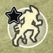
CYBORGS: Your 7 Cyborg forces are each worth 2 normal forces in battle, are able to move 2 territories, and can collect 3 spice during the Spice Collection Phase. Your Cyborg forces ship normally, but each costs 3 spice to revive.SUBOIDS: Your 13 Suboid forces are able to move 2 territories if accompanied by at least one Cyborg and ship normally but are worth ½ in battle. You can’t increase the effectiveness of Suboids in battle by spending spice. When dialing ½ for a Suboid, use the hash marks between battle wheel numbers as needed. Suboids can also be used to absorb losses after a battle. After battle losses are calculated, any of your surviving Suboid forces in that territory can be exchanged for Cyborgs you lost in that battle.
For example, if the Ixians had 2 Cyborgs and 6 Suboids in a battle and dialed 6, the Ixians would need to lose a strength of 6, which could be 2 Cyborgs (for 4), and 4 Suboids (for another 2). Then, since they had 2 surviving Suboids, they can swap those with the 2 Cyborgs they just sent to the Tleilaxu Tanks.
F. – After an ally purchases a Treachery Card during a normal or Black Market auction, they may look at it and decide whether to immediately discard it to draw the top card from the Treachery Deck.
G. – If your forces occupy the Hidden Mobile Stronghold, you may use a Karama Card to move the Hidden Mobile Stronghold 2 territories during your shipment and movement. Ability can be cancelled by Karama.
Moritani
You resort to terrorism.

6 forces in any unoccupied territory after all other factions set up and 14 forces in reserves (off-planet). Start with 12 spice, 1 random Treachery Card, and 6 Terror tokens.
FREE REVIVAL2 forces/turn
A. – TERRORIZE: During the Mentat Pause Phase, you may place (face down) or move 1 of your Terror tokens. Terror tokens can only be placed in or moved to non-Hidden-Mobile strongholds without any Terror tokens. When forces (including advisors) from a faction you are not allied with ship or move into a stronghold containing a Terror token, you may reveal that Terror token, remove it from the game, and apply its effects to the triggering faction.
Assassination: Send a random leader from the triggering faction to the Tleilaxu Tanks, collecting spice from the Spice Bank equal to the leader’s strength (3 for Zoal).
Atomics: Send all forces in the territory to the Tleilaxu Tanks, and place the ATomics Aftermath token in the territory. Forces can no longer ship or cross-ship into this territory. From now on, the hand limit for the Moritani and your ally is reduced by 1 (discard a random card if you exceed the hand limit when this triggers).
Extortion: Place 5 spice from the Spice Bank in front of your Player Shield. Collect it in the Mentat Pause Phase, then regain this Terror token unless any one player in storm order pays you 3 spice.
Robbery: Steal half the triggering faction’s spice (rounded up) or take the top card of the Treachery Deck (discarding a card of your choice if you exceed your hand limit).
Sabotage: If possible, draw 1 random Treachery Card from the triggering faction and discard it. Then, you may give the triggering faction 1 Treachery Card of your choice from your hand.
Sneak Attack: Place up to 5 forces from your reserves into the target territory (subject to storm and occupancy rules).
B. – ENEMY OF MY ENEMY: When forces from a non-Ecaz faction ship or move into a stronghold containing a Terror token, you may offer to enter into an Alliance with that faction. If they accept, you both break your existing Alliances (if any) and immediately become allies. Your Terror token is not revealed and returns to your supply. If the faction does not accept, you must reveal the Terror token and trigger its effects.
C. – DUKE VIDAL: At the end of the Shipment and Movement Phase, if a) Duke Vdal is not in the Tleilaxu Tanks, and b) you are in at least two battles in strongholds with non-Ecaz opponents, add Duke Vidal to your leader pool (even from another faction). If Duke Vidal is still in your leader pool at the end of the turn, place his Leader Disc next to the game board.
D. – ASSASSINATE LEADERS: When you lose a battle in which a) the opposing faction’s leader was not killed, b) no Traitor was revealed, c) you have no Traitor Cards of the opposing faction face up in front of your Player Shield, and d) you have not yet revealed your Traitor Card normally this game, you may reveal a Traitor Card of the opposing faction that doesn’t match your leader from the battle to send the leader you reveal to the Tleilaxu Tanks, and collect spice from the Spice Bank equal to your strength (3 for Zoal). During the Mentat Pause Phase, set the revealed Traitor Card face up in front of your Player Shield as a marker, then draw a new Traitor Card.
E. – When your ally loses a battle that had a winner, they may keep one Treachery Card they played in the battle that they would have been able to keep had they won.
F. – You may use a Karama Card after you lose a battle to force your opponent to discard or keep any or all of the Treachery Cards they played. Ability can be cancelled by Karama.
Richese
You have alternative technology.
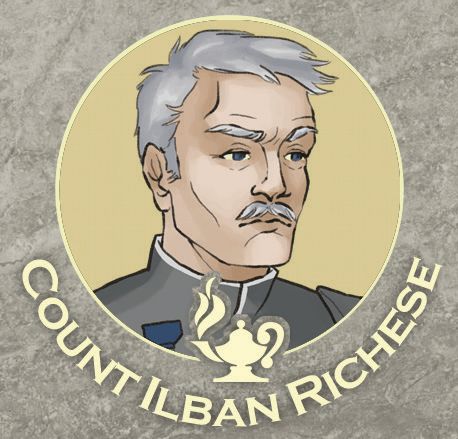
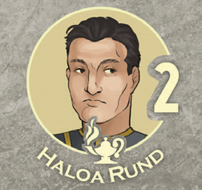
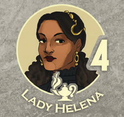
20 forces in reserves (off-planet). Start with 5 spice, 1 random Treachery Card, and the 10 Richese Treachery Cards.
FREE REVIVAL2 forces/turn
A. – BIDDING: During the Bidding Phase, you must auction one Richese Treachery Card of your choice from your cache in place of one normal Treachery Card (one fewer Treachery Card is put up for auction in the normal Bidding Round). At the start of Declaration, you must announce whether your Richese Treachery Card will be auctioned immediately or after the normal Treachery Cards up for bid. When you auction the card, reveal it and choose either a Once Around or Silent Auction method (see below). The winner of the bid pays spice to you (Karama Cards can’t be used); you pay spice to the Emperor (if in play) or Spice Bank if you win the bid or contribute to your ally’s payment. When discarded, Richese Treachery Cards are discarded to the Treachery Card discard pile.
- Once Around Auction—Cho ose a direction (clockwise or counterclockwise). Starting with the faction following you in that direction, each faction has a single opportunity to pass or raise the current bid. The highest bidder wins the bid. If everyone else passes, you may either gain the card for free or remove it from the game.
- Silent Auction—All factions able to bid place any amount of spice in one hand (including zero). Factions reveal your bids simultaneously and the faction with the most spice in hand wins the bid (ties break to the tied faction earliest in Storm order). Before revealing bids, factions may declare that the spice in your hand contributes to your ally’s bid. If everyone bids zero spice, you may either gain the card for free or remove it from the game.
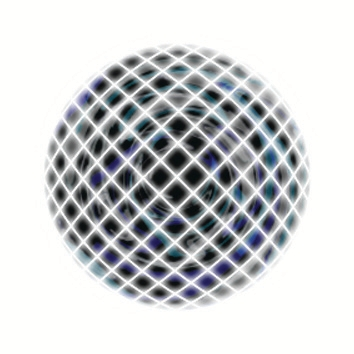
B. – NO-FIELD: You have 3 No-Field Tokens representing 0, 3, or 5 forces. However, they are considered 1 force for all effects until revealed (including spice collection). There may never be more than 1 No-Field Token on the planet at a time. When you are in a Battle with a No-Field Token, Atreides may not use Prescience to see the number dialed on your Battle Plan.
In place of your normal Force Shipment, you may ship 1 No-Field Token from behind your Player Shield face down, paying only the cost of shipping a single force. During your Force Movement, you may move No-Field Tokens on the planet like they are forces.
A No-Field Token must be revealed when caught in a storm, by a worm, in a lasgun/shield explosion, and when revealing your Battle Plan, but you may optionally reveal a No-Field Token at any time before the Battle Phase. When a No-Field Token is revealed:
- Place the indicated number of forces from your reserves (or up to that amount if you have fewer forces left in reserves) in the territory where the No-Field Token was revealed. These forces are subject to any effects triggering your reveal (e.g., they are destroyed by the storm).
- Place the revealed No-Field Token face up in front of your Player Shield, and return any No-Field Token already there behind your Player Shield.
C. – BLACK MARKET: At the start of the Bidding Phase, before Declaration, youmay auction one Treachery Card from your hand. You may announce what you are selling, and you may lie, but you do not show any player what is up for auction (Atreides may use your faction ability to look). Choose a normal, Once Around, or Silent Auction method. If the normal bidding method is chosen, proceed in storm order and resume bidding on normal Treachery Cards where bidding left off. The winner of the bid pays spice to you (Karama Cards can’t be used). If no player bids any spice for your card, you must keep it, and the phase proceeds. If a card from your hand is sold, one fewer Treachery Card is put up for auction in the normal Bidding Round.
D. – For your ally’s Force Shipment, you may offer to ship your forces from off-
planet using one of your available No-Field Tokens. Reveal the forces immediately upon shipping (if you already had a No-Field Token on the planet, it must first be revealed). Either you or your ally may pay for this shipment. You may give your ally a Richese Treachery Card that is in your hand at any time if your hand is not full.
E. – At any time, you may use a Karama Card to pay 3 spice to buy one of
your Richese Treachery Cards, secretly choosing which one. Ability can be cancelled by Karama.
Spacing Guild
You control all shipment onto and off of Dune.
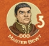
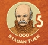
5 forces in Tuek's Sietch and 15 forces in reserves (off-planet). Start with 5 spice and 1 random Treachery Card.
1 force/turn
A. – PAYMENT FOR SHIPMENT: When other factions ship forces onto Dune from your off-planet reserves, they pay the spice to you instead of to the Spice Bank.
B. – THREE TYPES OF SHIPMENT: You are capable of making one of three types of Force Shipment each turn:
- Normally from your off-planet reserves to any one sector of any one territory.
- Cross-shipping any number of your forces from any one territory to any one sector of any other territory on the board, subject to storm and occupancy rules.
- Returning any number of your forces from any one territory back to your reserves.
C. – HALF PRICE: You pay only half the normal fee (rounded up) when shipping your forces; you pay 1 spice for every 2 of your forces shipped back to reserves.
D. – SHIP AND MOVE WHEN YOU WISH: You may take your Force Shipment andForce Movement out of turn. This allows you to go first, last, or in between other players’ turns. The rest of the factions must make your shipments and movements in the proper sequence. You do not have to reveal when you intend to make your Force Shipment and Force Movement until the moment you wish to take them.
E. – SPACING GUILD SPECIAL VICTORY CONDITION: If no faction has been able to win the game by the end of play, you have prevented control of Dune and automatically win the game.
F. – Allies may ship from your off-planet reserves onto Dune or cross-ship from one territory to another with your forces that are already on Dune at the Spacing Guild half-price rate (including cross-shipping Fremen forces from reserve). Your allies win with you if you win with the Spacing Guild Special Victory Condition.
G. – You may use a Karama Card during the Shipment and Movement Phase to stop one off-planet shipment of any one player. Ability can be cancelled by Karama.
Tleilaxu
You have superior genetic engineering technology.
20 forces in reserves (off-planet). Start with 5 spice and 1 random Treachery Card.
FREE REVIVAL2 forces/turn
A. – FACE DANCERS: At the start of the game you are not dealt Traitor Cards. After traitors have been selected and unused Traitor Cards returned to the deck, shuffle the Traitor Deck and take the top 3 cards. These are your Face Dancers.
When another faction wins a battle using a leader that matches a Face Dancer you control, you may reveal your Face Dancer and pause the game. When a Face Dancer is revealed:
- The battle still counts as a win for that player (they keep or discard Treachery Cards, place tokens and killed leaders in the Tleilaxu Tanks, collect spice for any leaders killed, and claim a Tech Token if appropriate).
- The Face Dancer leader is sent to the Tleilaxu Tanks if it was notalready killed, but no spice is collected for it.
- The remaining non-advisor forces in the territory go back to your reserves and are replaced with up to the same number of Tleilaxu forces from your reserves and/or from anywhere on the planet.
Once revealed you do not replace a Face Dancer (Traitor Card) until you have revealed all 3. When that happens, place all 3 Face Dancers in the Traitor Deck, shuffle, and draw 3 new Face Dancers.
During the Mentat Pause Phase, you may discard 1 unrevealed Face Dancer. Shuffle it into the Traitor Deck and draw a new Face Dancer.
B. – TLEILAXU REVIVAL: Other factions make revival payments to you instead of to the Spice Bank. You make revival payments to the Spice Bank at half price (rounded up). You may revive any number of your forces and/or leaders during the Revival Phase, even before all 5 of your leaders are in the Tleilaxu Tanks.
C. – FORCE REVIVAL: You may increase the 3-force revival limit for any other faction to 5. Also, take 1 spice from the Spice Bank for each faction using free revival or a Ghola Card (including yourself).
D. – LEADER REVIVAL: Each faction with at least 1 leader in your leader pool can request you to revive one of your specific leaders (including Atreides’ Kwisatz Haderach token) in the Tleilaxu Tanks per Revival Phase. You can set a price in spice (including 0) and, if met, revive that leader.
E. – GHOLAS: When you have fewer than 5 leaders in your leader pool you may revive other factions’ dead leaders to your leader pool (at half price, up to a limit of 5 total leaders in your leader pool).
F. – ZOAL: Zoal’s fighting strength matches the printed fighting strength of the opponent’s leader (0 against a Cheap Hero) and for collecting spice for his death. Zoal’s revival cost is 3 spice.
G. – You may allow your allies to revive your forces and leaders at half price (rounded up).
H. – You may use a Karama Card during the Revival Phase to prevent any one player from reviving forces and/or leaders. Ability can be cancelled by Karama.
Treachery Card Errata
Family Atomics card text should read:
You may play this card during any Storm Phase after the first game turn if you have one or more forces on the Shield Wall or a territory adjacent to the Shield Wall with no storm between their sector and the Wall (even if their sector or the Shield Wall is in storm). Play after the storm movement is calculated but before the storm is moved.
All forces on the Shield Wall are destroyed.
Place the Destroyed Shield Wall token on the Shield Wall as a reminder. The Imperial Basin, Arrakeen, and Carthag are no longer protected from the Storm for the rest of the game. The Shield Wall remains a rock territory and may be entered normally. Remove this card from the game after use.
Tleilaxu Ghola card text should read:
Play at any time to immediately revive 1 of their leaders or up to 5 of their forces from the Tleilaxu Tanks for free, regardless of how many leaders you have in the Tleilaxu Tanks.
These revivals do not count against their normal revivals for the turn.
Hajr card text should read:
Play during the Shipment and Movement Phase immediately after their Force Movement.
Make an extra on-planet Force Movement subject to normal movement rules.
The forces you move may be a group you’ve already moved this phase or another group.
Poison Tooth replacement card text (CHOAM expansion) reads:
Play as part of their Battle Plan. Kills both leaders, and is not stopped by a Snooper. After seeing the battle results, you may choose not to use this weapon. If you win the battle and did not use this card, you may keep it. Otherwise, it is discarded.
Artillery Strike replacement card text (CHOAM expansion) reads:
Play as part of their Battle Plan. Kills both leaders. Both players may use Shields to protect their leader against the Artillery Strike. Surviving (shielded) leaders do not count towards the battle total; the side that dialed higher wins the battle. No spice is collected for any leader killed in this battle. Discard after use.
Karama Card text should read (aligned to the CHOAM expansion replacement cards):
After game setup and factions have completed their "At Start" actions, use this card to stop one use of a faction advantage (including alliance abilities) when a player attempts to use it. When used on faction advantages during a battle this must be played before Battle Plans are revealed.
Or, this card may be used to do one of the following when appropriate:
- Purchase any player’s Force Shipment at Guild rates (½ normal), paid to the Spice Bank.
- Bid more spice than you have (without revealing this card) and/or purchase a Treachery Card without paying spice for it (cannot be used for Richese Auctions or if their hand is full).
- Use their faction’s Special Karama Power (limit once per game).
Cannot be used to stop a Special Victory Condition or Special Karama Power. Discard after use.
Truthtrance card text should read:
Play at any time to publicly ask one other player a single yes/no question about the game. They must answer "yes" or "no" publicly and do everything in their power to abide by their answer during the current turn. If it is impossible to abide by their answer later in the turn, they are no longer bound by their answer. If a player is asked something beyond that player’s ability to decide to do they may answer "I don’t know." If a player can’t answer a Truthtrance question, the player playing it can ask a different question, or choose to play Truthtrance at a future point.
The game pauses until an answer is given.
Questions and Answers
General Questions
Are players allowed to take notes about matters other than cards? How about taking notes about public knowledge including cards played and retained in battles, traitors, etc.
Answer: Yes, and those notes can be kept secret. In competitive play, tournament rules apply and the expectation may be that no written notes of any kind can be kept other than the Atreides bidding advantage.
What happens if at the end of the last turn, no one has won, and the Spacing Guild are not in play?
Answer: The Fremen win. If they are not in play, the player occupying the most strongholds wins. If several qualify, all who qualify win.
In the Advanced Game, when reshuffling the Spice Deck, must you reshuffle the entire deck?
Answer: Yes.
In the Advanced Game, do the Fremen get the sandworm advantage bonus if a second sandworm appears in a Spice Phase?
Answer: Yes, as long as the second sandworm is drawn immediately after the first one.
Can the Atreides faction use the Kwisatz Haderach token immediately after losing their 7th token?
Answer: Yes, you can lose the token in one battle and use the Kwisatz Haderach token in another one that turn.
Why did you decide not to adopt the alliance constraint rulings from the rules and November 2020 FAQ as written?
Answer: Including Bene Gesserit advisors in the alliance constraint unnecessarily complicates the alliance constraint rules and dramatically changes the game by effectively locking down any strongholds they have advisors in from their allies (which is more than likely most of the strongholds). It also departs from the consistency of the ruling that "advisors have no effect on the play of the other factions whatsoever" when advisors already adhere to the alliance constraint rule intent clarified in the November 2020 FAQ of "allies may never battle one another." If players choose to play with the alliance constraint rule as written in the November 2020 FAQ, I suggest also allowing Bene Gesserit players to send their advisors to the tanks at any time in order to provide their alliance some measure of movement flexibility.
With regard to movement of allies, I preferred to adopt a single consistent rule that addressed all of the alliance constraint scenarios even though it places the impetus for movement out of an alliance territory on the first player to ship and move.
I recognize others may disagree with these rulings and encourage everyone to play how they find the game most fun.
Storm
Are forces in the sector where the storm begins its movement killed by the storm?
Answer: No, only forces in a sector of sand territory (except the Imperial Basin) over which the storm passes or stops are killed.
Should Weather Control be played first and then Family Atomics, or the other way around, or are both ways allowed?
Answer: You can play them in either order, but their effects are executed in the order they are played.
Revival
Are revived leaders still subject to turning traitor?
Answer: Yes. Once a leader is a traitor, they are always a traitor for the entire game; however, they can now be used safely in battles with any faction except the one that holds it as a traitor.
Can players revive leaders if their other leaders have been captured by the Harkonnens or are Tleilaxu Gholas?
Answer: Yes. All players can begin to revive their leaders if they don’t have any of their own leaders available to play in battle.
Movement
When the Fremen ship, must they include the Great Flat when counting the two territory range from the Great Flat?
Answer: No. Never include the Great Flat when counting the two-territory range.
Can a player’s forces, that have moved into different sectors of the same territory at different times, move or ship as a single group?
Answer: Yes.
If a storm is over Arrakeen or Carthag does it affect the three territory (ornithopter) move?
Answer: No, except of course, into, out of, or through the storm.
Battle
May the same weapon or defense card be played in more than one battle in the same phase if victorious?
Answer: Yes.
Can a player’s forces that have moved into different sectors of the same territory at different times battle as a group?
Answer: Yes, they must fight as a single group (if the storm permits).
What happens if Truthtrance, Bene Gesserit Voice and Atreides Prescience or some combination thereof, are being used in the same battle?
Answer: The Bene Gesserit Voice must always be used before the Atreides Prescience. Truthtrance can be played at any time in this interaction. Please note that a player has the ability to alter components of their Battle Plan that are not affected after being Voiced, Prescienced [sic] or Truthtranced.
Can you still use the leader with the Mentat Skill in a battle if you use the skill to ask about a weapon?
Answer: Yes. The Mentat skill’s effect takes place before Battle Plans are made, so you may use the effect and then still take that leader behind their Player Shield (to potentially use in battle).
What happens if a player’s Prescience answer becomes impossible to meet (e.g., due to subsequent play of a Karama card)?
Answer: You must provide an updated valid answer to the Prescience question before battle plans are revealed.
What happens if a player’s revealed Battle Plan isn’t legal (e.g., dials a number higher than their tokens and/or spice paid allows, contains multiple Leader Discs or Treachery Cards of the same type, or doesn’t include a leader when one is available to play)?
Answer: If a number is dialed in excess of what can be supported, it is reduced to the highest supportable number. For excess Leader Discs or Treachery Cards, randomly select which is included from those played and return the other elements to the player’s supply. If a leader isn’t included in a Battle Plan when it was available to be included, the lowest available Leader Disc from that player is used for the battle.
Treachery Cards
What is the standard rule for discarding Treachery Cards after they are played?
Answer: Treachery Cards must be discarded unless the card says they can be returned to their hand. When a card is used in battle, the winning player may choose to keep any cards they used, unless the card specifically indicates that it is discarded (e.g., cheap hero).
Can a Tleilaxu Ghola Card allow a leader to fight in the same phase in which they were killed?
Answer: Yes, a leader revived by this card during a Battle Phase can be used in the same Battle Phase.
Does Thumper cause a Nexus? If another Sandworm is drawn after the Thumper is played, can the Fremen cause that worm to appear anywhere in the Advanced Game?
Answer: Yes to both questions.
Is Poison Tooth stopped by Chemistry? Is it stopped by any other kind of poison defense?
Answer: Yes to the first question. No to the second; any poison defense defined as a Snooper does not stop Poison Tooth.
Can Shield Snooper trigger a Lasgun-Shield explosion? Does it keep their leader safe from Artillery Strike?
Answer: Yes.
Is their leader safe from Artillery Strike if you use Weirding Way? Does Weirding Way used as a projectile defense trigger a Lasgun-Shield explosion?
Answer: No to both questions. Weirding Way can be a projectile defense but does not count as a shield.
What are the default types for special weapons with more than one possible categorization?
Answer: Chemistry counts as a poison defense, Poison Blade counts as both a projectile and poison weapon, Poison Tooth counts as a poison weapon, Shield Snooper counts as both a shield and snooper, Weirding Way counts as a projectile weapon. Because of this, Chemistry and Weirding Way’s alternate types cannot be forced into play with the Voice but can be prevented by it.
Spice Cards
How does the Sandtrout work?
Answer: The Sandtrout is an anti-Nexus. If any alliances existed when you draw the Sandtrout, they are canceled. Furthermore, the next time you draw a Shai-Hulud, a new Nexus does not occur. When you immediately draw that Shai-Hulud’s replacement card, if it is another Shai-Hulud, you then have a normal Nexus. But if the replacement card is a Spice Blow, it is doubled.
Factions
Using Double Spice Blow Advanced rules, does Atreides get to look at two cards?
Answer: No, only one.
What does Atreides get to see when using Prescience to see a weapon if the opponent is using Weirding Way and a weapon? Or if Atreides asks to see a defense if the opponent played Chemistry with a Snooper?
Answer: Weirding Way only counts as a weapon if no other weapon is played with it, so Atreides gets to see the other weapon. In the case of Atreides asking to see the defense when you play Weirding Way with a weapon, the Weirding Way counts as a projectile defense, and that’s what Atreides would see. Similarly, Chemistry does not count as a defense when played with another defense, so the other defense is the one revealed.
Can the Bene Gesserit ship a spiritual advisor when Ixians ship directly to the Hidden Mobile Stronghold?
Answer: Yes.
If Tleilaxu use the Harkonnen Secret Alliance effect, does the Traitor Card they keep now count as a Face Dancer or a Traitor?
Answer: Face Dancer.
Can an Atreides leader accompanied by the Kwisatz Haderach token be a Face Dancer?
Answer: Yes.
Can Tleilaxu revive other players’ face down leaders as Gholas per their Advanced Game ability?
Answer: Yes. If they die again, they are placed face down in the Tanks (and the Tleilaxu could revive them again if they have fewer than 5 leaders).
What happens if CHOAM uses Trip to Gamont on Richese at a location where they have a No-Field token?
Answer: The No-Field Token must be revealed, and one Richese force placed there would return to reserves. If none are there, the card is still considered used.
If Tleilaxu have Rihani Decipherer and gain a Traitor Card, does it count as a Traitor or a Face Dancer?
Answer: It counts as a Face Dancer, but it can only replace an unrevealed Face Dancer.
| Alliance Restriction | Possible Side Effect | Comment |
|---|---|---|
| Default Game Alliance 2 Player Alliance limit 4 Strongholds to win | A longer game | Players look for synergy with one other player and try to win together but must try to hold on to the strongholds they have. |
| 2 Player Alliance limit 3 Strongholds to win | A shorter game | Players look for synergy with one other player and try to win together by holding or capturing 3 strongholds. |
| 3 Player Alliance limit 4 Strongholds to win | A longer short game | May devolve into 3 strongest against 3 weakest, etc. but supposedly weaker players may be able to reverse the stronger players’ fortunes and tip the balance. |
| 3 Player Alliance limit 3 Strongholds to win | Probably the shortest game | May devolve into 3 strongest against 3 weakest, but supposedly weaker players may pull off a surprise win by winning key battles. |
| Any number of Players in Alliances 3 Strongholds to win | A more exotic game | The original Dune rules Alliance game; adversity creates ingenuity. |
Credits
Original rules
Game Design:
Peter Olotka, Jack Kittredge, Bill Eberle
Development & Quick Start Guide:
Greg Olotka
Special Thank You to
Ian Allen at Seventh Son Games for Rules Consulting
Play Testing
Thanks to the North Shore Gamers: Greg Schmidt, Joe Don Richardson, Rowan Miller, David Kuznick, Bob King, John Grubb and Alex Bowers
Avalon Hill Credit Development:
Mark Uhl and Richard Hamblen.
Avalon Hill Playtest:
Don Greenwood, Bruce Milligan, George Uhl, Robert Uhl, Seth Carus, Paul O’Neil, Jim Skinner, Future Pastimes and the people at Johns Hopkins U., Carmen, Brandy and Doug
Artwork:
Ilya Baranovsky Producers: Peter Simunovich, John-Paul Brisigotti Graphic Design: Casey Davies, Victor Pesch
Logo Design:
Vicki Tunkel
Genuine Entertainment Producer:
Joe LeFavi
Special Thank You to
Robert Blance, Richard Foster, Reid Pittams, Simon Paton, and the Battlefront Studio Team.
Brian Herbert, Kevin J. Anderson and the Herbert properties team.
Elie Dekel, Lisa Lilly, Eric Morreel and the Legendary team.
Games Design © Gale Force Nine 2019. Gale Force Nine is a Battlefront Group Company
DUNE © 2019 Legendary. All Rights Reserved.